💡 Scroll to Zoom | Click & Drag to Pan | Esc to Close
Product, Cognitive, Architecture, Research, and Experiment Design Package
2026-07-27
This compiled edition contains the principal design-studio documents in reading order. The individual Markdown files remain the preferred editable sources. Templates and preserved source materials are included in the package but not repeated in full here.
Prepared: 2026-07-27
Mode: research, architecture, product design, and deliberate experimentation
Starting point: the current Big Brain Time repository is treated as an instrumented proof of concept—not as a frozen product architecture.
Big Brain Time has already crossed an important threshold: it is no longer only a collection of notes or a speculative architecture. It is a working prototype that exposes real questions about memory, truth, continuity, synthesis, planning, autonomy, and human–AI collaboration.
That is exactly the point at which building faster can become less useful than designing more deliberately.
This package creates a temporary “design studio” around the prototype. Its purpose is to let Jonathan:
The package is intentionally larger than an implementation plan and smaller than a final specification. It is a thinking environment.
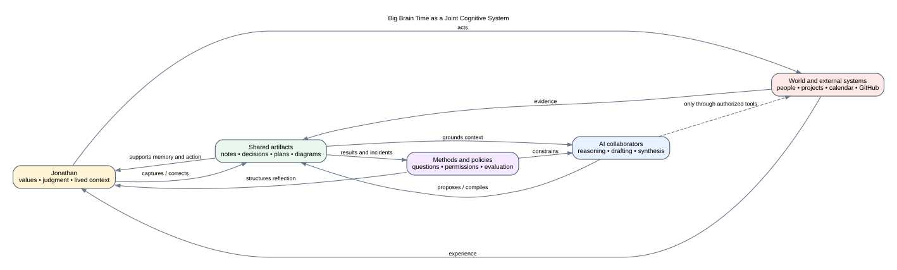
Big Brain Time can become a durable joint cognitive capability platform by preserving source and history, maintaining an explicit active frame, representing epistemic state and commitments, coordinating human and AI roles, compiling purpose-specific context, closing action through independent verification, and adapting its methods under explicit human authority.
The original blueprint correctly identified a narrower first opportunity: accurate resumption, conflict detection, and source-grounded context. The design studio keeps that practical kernel while exploring the larger ambition of a secondary cognitive system.
The joint cognitive system is organized through five functional planes: purpose, cognitive control, knowledge, governance, and adaptation. Its core loop is attend → sense → frame → generate → challenge → decide → act → verify. Participants and tools contribute across those planes; they are not themselves the operating model.
The package uses eight distinctions repeatedly because much of the architectural confusion comes from collapsing them:
A prototype proves that an interaction or mechanism can exist. A product must also be understandable, recoverable, governable, maintainable, and useful over time.
Episodes, narratives, preferences, goals, plans, decisions, hypotheses, and simulations are all useful memory objects, but they do not all have the same truth conditions.
A search index, graph, summary, context pack, or embedding may be useful without becoming the authoritative place where the underlying meaning lives.
Research constrains what is plausible and reveals failure modes. It rarely determines a product choice without considering this system’s goals, users, scale, privacy, and maintenance burden.
A module can pass tests and still make Jonathan’s overall workflow slower, noisier, harder to trust, or more dependent on maintenance.
An artifact may be relevant without belonging in the current frame. Surfacing and interruption must be governed by purpose, commitment risk, consequence, uncertainty, reversibility, novelty, and attention cost—not model confidence alone.
A successful tool response proves that an operation was attempted or accepted at one boundary. Consequential action is complete only when the intended external state is independently observed and reconciled with the prediction.
Calendar and GitHub are instrumented external authorities. People and institutions have their own rights, interpretations, expectations, and capacity to disagree; they are not systems to query or modify.
The documents can be read linearly, but the package is designed for repeated passes.
00_DESIGN_STUDIO_CHARTER.md01_CURRENT_PRODUCT_AND_PROOF_OF_CONCEPT.md02_PRODUCT_THESIS_AND_CAPABILITY_MODEL.mdOutput: a one-page statement of what Big Brain Time is trying to make possible and which current capabilities should be preserved.
Output: mark each subsystem as core, capability pack, adapter, external authority, derived, or not yet justified.
Output: work through three real memories, one changing belief, one preference, one decision, and one scenario using the proposed object model.
Output: select no more than three design questions for deeper research or prototype work.
09_PRODUCT_DESIGN_METHOD_AND_GOVERNANCE.md11_EXPERIMENT_PORTFOLIO_AND_DECISION_GATES.mdtemplates/Output: create one complete design-question packet and one experiment card before writing new production code.
10_GENERALIZATION_AND_PRODUCTIZATION.md13_DESIGN_WORKBOOK.md14_GLOSSARY.mdSOURCES_AND_TRACEABILITY.mdOutput: distinguish the universal kernel from Jonathan’s profile and choose the smallest reusable product surface worth testing.
A “session” can be an hour, an evening, or a week. The sequence is deliberately slower than a sprint plan.
| Session | Focus | Concrete artifact |
|---|---|---|
| 1 | Current proof of concept | Keep / question / retire list |
| 2 | Product thesis | Product promise and anti-promise |
| 3 | Jobs and quality attributes | Top five capability scenarios |
| 4 | System boundaries | Authority and external-system map |
| 5 | Cognitive object model | Five worked memory examples |
| 6 | Retrieval and context | Two context-contract examples |
| 7 | Synthesis and forgetting | One compression contract and one purge case |
| 8 | Design tensions | Two QOC option maps |
| 9 | Research agenda | Three bounded research questions |
| 10 | Generalization | Kernel / profile / capability-pack split |
| 11 | Experiment design | Baseline, probe, measures, stop rule |
| 12 | Architecture review | Decision packet and next smallest build |
No session is required to end in a decision. An explicit unresolved question is a valid outcome.
| Document | Primary question |
|---|---|
00_DESIGN_STUDIO_CHARTER.md |
How should this design phase operate? |
01_CURRENT_PRODUCT_AND_PROOF_OF_CONCEPT.md |
What exists now, and how mature is it? |
02_PRODUCT_THESIS_AND_CAPABILITY_MODEL.md |
What product is being designed? |
03_SYSTEM_LANDSCAPE_AND_ARCHITECTURE.md |
What are the system boundaries and major layers? |
04_SUBSYSTEM_ATLAS.md |
What does each subsystem do, depend on, and risk? |
05_COGNITIVE_AND_MEMORY_MODEL.md |
What kinds of memory and mental objects must be represented? |
06_SYNTHESIS_CONSOLIDATION_AND_FORGETTING.md |
When and how may information be compressed or removed? |
07_DESIGN_TENSIONS_AND_OPTION_SPACES.md |
Which choices should remain open, and how can they be compared? |
08_RESEARCH_AGENDA_AND_EVIDENCE_MAP.md |
Which research threads can materially change the design? |
09_PRODUCT_DESIGN_METHOD_AND_GOVERNANCE.md |
How are questions converted into evidence-backed decisions? |
10_GENERALIZATION_AND_PRODUCTIZATION.md |
How can a personal prototype become a reusable platform? |
11_EXPERIMENT_PORTFOLIO_AND_DECISION_GATES.md |
Which probes should be run, in what order, with what stop rules? |
12_DIAGRAM_ATLAS.md |
How can the product and subsystems be inspected visually? |
13_DESIGN_WORKBOOK.md |
What should Jonathan fill out while studying the system? |
14_GLOSSARY.md |
What does the package mean by its recurring terms? |
SOURCES_AND_TRACEABILITY.md |
Which ideas came from the current system, prior blueprint, research, or new proposals? |
The documents preserve the source package’s practice of distinguishing evidence from proposals, with a few additional labels:
[CURRENT] — observed in the current repository or its current documentation.[SOURCE] — supported by the supplied Big Brain Time blueprint and planning materials.[RESEARCH] — supported by cited external primary research, standards, or official documentation.[PROPOSAL] — a design recommendation introduced in this package.[QUESTION] — a deliberately unresolved design issue.[EXPERIMENT] — a proposed probe, benchmark, or field study.[INFERENCE] — a conclusion drawn by combining current evidence and design reasoning.A proposal does not become an architectural commitment merely because it is written clearly.
The package uses the following ladder:
These are independent of marketing language. A feature can be technically tested but not productively piloted, or trusted for retrieval but not authorized for mutation.
big-brain-time-design-studio/
├── README.md
├── 00_... through 14_... # principal design documents
├── SOURCES_AND_TRACEABILITY.md
├── BIG_BRAIN_TIME_DESIGN_STUDIO.md
├── diagrams/ # Graphviz source and rendered SVGs
├── templates/ # reusable design and experiment packets
└── reference/source-blueprint/ # preserved copies of supplied planning material
Read 00_DESIGN_STUDIO_CHARTER.md, then spend one session on the “keep, question, retire” worksheet at the end of 01_CURRENT_PRODUCT_AND_PROOF_OF_CONCEPT.md. Do not begin with the roadmap. The next build should emerge from the design risk that matters most, not from the next numbered sprint.
Big Brain Time has a credible proof of concept, a substantial architecture package, and multiple working mechanisms. The next phase is not primarily an implementation phase. It is a period of design inquiry intended to clarify the product, cognitive model, subsystem boundaries, architectural tradeoffs, and evidence required before deeper commitment.
The studio exists to answer a different question from a normal sprint:
What must be understood, represented, compared, and tested so that Big Brain Time can grow into a durable secondary cognitive system without hardening prototype assumptions into permanent constraints?
The supplied audit and blueprint identified accurate resumption and contradiction detection as the clearest immediate opportunity. It also documented concrete propagation, identity, temporal, retrieval, and recovery failures. The subsequent prototype demonstrates that many proposed capabilities can be implemented, but it also reveals that implementation names can outrun semantic guarantees.
This creates a productive moment:
The studio treats the repository as a research instrument. Its purpose is not to prove the current design correct. Its purpose is to make important assumptions observable.
Develop a coherent, evidence-backed design language and product architecture for a local-first human–AI cognitive system that can preserve experience and knowledge, support accurate resumption and action, represent changing perspectives, synthesize without hiding loss, and remain recoverable, governable, and adaptable.
The studio covers four connected but distinct layers.
Questions include:
Questions include:
Questions include:
Questions include:
The studio does not require:
Implementation is allowed only when it is the cheapest way to test a material design question.
The current system contains valuable learned structure. Preserve the repository and record its behavior, but allow any module, schema, taxonomy, or workflow to be redesigned if evidence warrants it.
Do not solve a cognitive-model question by immediately adding a database column. First clarify the concept and examples; then decide whether the concept needs durable structure, derived structure, or prose.
A design question should normally have at least two credible options. A single proposed solution is often an unexamined assumption.
Every important architectural property should be grounded in a concrete scenario:
The system will be wrong. The product should make the location, cause, influence, and repair of an error understandable.
Every schema, marker, relation, prompt, policy, view, and workflow creates ongoing cognitive and technical cost. A concept is not free because it is stored in Markdown.
Formalization should improve addressability and reasoning without erasing narrative, ambiguity, voice, emotion, or historical perspective.
A more sophisticated method must outperform a simpler baseline on a declared problem. This applies to embeddings, graphs, multi-agent orchestration, formal epistemic systems, CRDTs, complex ontologies, and proactive automation.
The unit of improvement is not the model or database alone. It is Jonathan + AI + artifacts + language + methods + environment over time.
Every major commitment needs a way to export, rollback, rebuild, replace, archive, or retire it.
Human attention is finite system capacity. Every interruption, review request, persistent alert, and context field creates carrying cost. Surfacing should be purpose- and commitment-aware, explainable, deferrable, and tested against simpler baselines.
Execution is not completion. Consequential action needs a prior prediction, explicit authority, independent observation, reconciliation with the expected state, and rollback or incident capture when they differ.
Jonathan remains the authority for methods and policies. They may be proposed, tested, provisionally adopted, ratified, amended, overridden, suspended, or deprecated in response to evidence and incidents.
When context, dependencies, models, tools, policies, or human review capacity are unreliable, the system should name the degraded capability, narrow permitted behavior, offer a bounded fallback, and state the recovery path.
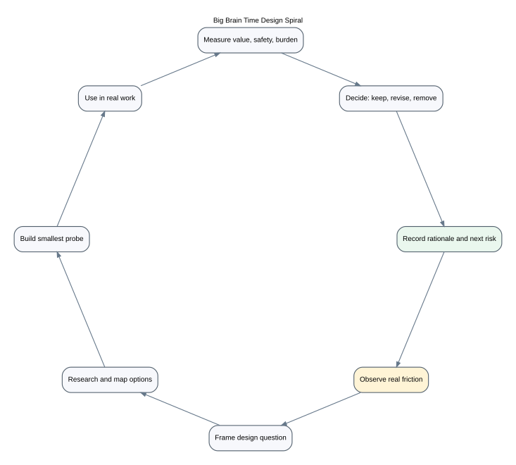
Each design cycle follows eight stages.
Capture a real friction, surprise, failure, repeated reconstruction, or emerging opportunity. Preserve the raw example.
Convert the observation into a design question. Avoid framing that assumes a solution.
Poor framing:
How should we add vector search to memory?
Better framing:
Which retrieval failures remain after exact, lexical, temporal, and link-based retrieval, and what additional mechanism addresses them with acceptable privacy and maintenance cost?
Review current system evidence, comparable systems, primary literature, standards, and implementation constraints. Record what the evidence supports and what remains an inference.
Use Questions–Options–Criteria or an equivalent design-space map. Include the current design as one option, not the default winner.
Create the smallest artifact that can discriminate among options. A probe may be a paper model, mock interaction, schema example, benchmark fixture, command-line prototype, diagram, or throwaway script.
Use the probe in a real or faithfully simulated workflow. Record confusion, workarounds, maintenance, emotional response, and unexpected use—not only task success.
Compare results with a baseline and stop rule. Distinguish technical correctness from practical value.
Keep, revise, defer, or remove the design. Record rationale, scope, confidence, reconsideration trigger, and the next unresolved risk.
Every major investigation should produce a small set of durable artifacts:
Templates are provided in templates/.
The original blueprint already prioritizes reliability, provenance, privacy, reversibility, low maintenance, and human authority. The studio will make tradeoffs among these attributes explicit.
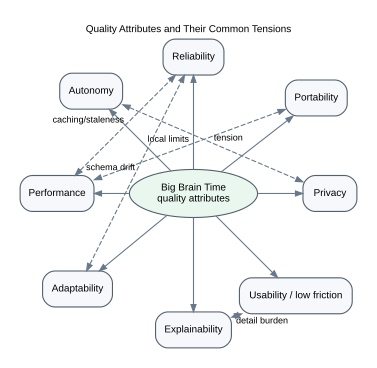
For each architecture question, consider at least:
No design maximizes all of them.
A studio finding may have one of five outcomes:
A decision must state its scope. “Use SQLite” is not a sufficient decision. “Use SQLite as a disposable local projection for sections and FTS under a deterministic rebuild contract” is closer.
Pause a design line when:
The studio phase is successful when:
The first ten design inquiries should be treated as candidates, not a fixed sequence:
Current status: Design Studio Open
Implementation posture: maintenance and narrow probes only
Primary output: design understanding and experiment-ready decisions
Reconsider implementation mode when: one design question has a bounded option space, discriminating probe, acceptance criteria, and recovery path.
This document combines:
admiralorbiter/bigbraintime repository on 2026-07-27;The repository was not independently executed as part of this package. Statements about passing test counts are therefore treated as repository-reported evidence, not fresh verification.
The strongest source-backed framing is not “a second-brain app.” The supplied audit identified the immediate need as accurate resumption without rereading the corpus and detection of disagreements, stale state, broken propagation, and incomplete knowledge. The larger blueprint then framed Big Brain Time as a local-first, source-grounded, temporal capability platform and a kind of knowledge compiler.
The current proof of concept combines five product identities:
This breadth is a strength as a research prototype: it exposes how the subsystems interact. It is also a risk: each name can imply a level of completeness that the underlying implementation has not yet earned.
The original blueprint’s product mission remains a useful anchor:
Big Brain Time is a local-first, source-grounded, temporal personal capability platform that helps a human–AI partnership remember, resume, decide, act, learn, and improve without losing provenance, history, privacy, or human authority.
For the design phase, that mission should be paired with a more concrete product kernel:
Preserve enough trustworthy state, perspective, and rationale to resume meaningful work; compile only the context needed for the current purpose; expose uncertainty and change; and help convert understanding into safe commitments and actions.
The repository history reports rapid delivery across a wide set of modules. The following inventory treats the implementation as a proof-of-concept capability map.
| Capability | Current proof | Likely maturity | Key unresolved product question |
|---|---|---|---|
| Canonical Markdown corpus | Established repository structure, front matter, decisions, projects, records | Piloted for Jonathan’s use | Which information types should remain Markdown-canonical forever? |
| Backup command | Manifest-bearing archive and restore-oriented documentation | Tested, restore evidence should remain recurring | What counts as an independent recovery boundary? |
bbt doctor diagnostics |
Parser and registry rules for known defects | Tested on seeded cases | Does it remain precise enough in daily use to avoid alert fatigue? |
| Evaluation harness | Gold cases, answer-state concepts, metrics | Prototype/tested | Are benchmarks faithful to actual workflows or overfit to seeded defects? |
| Context packs | Project-scoped token-bounded compiler | Prototype/tested | Is selection purpose-driven and claim-complete enough for real handoffs? |
| SQLite read model | Documents, sections, links, claims, migrations | Tested as projection | Is rebuild semantically deterministic, especially for identity and time? |
| FTS5 and hybrid retrieval | Lexical search, embeddings, rank fusion | Prototype/tested | Which retrieval additions provide measured net value? |
| Graph traversal | Recursive CTE neighborhood and diagnostics | Prototype/tested | Which edges are meaningful, inferred, canonical, or merely retrieval aids? |
| Capture and patching | Smart target, patch generation, atomic apply, undo | Prototype/tested | Does capture processing reduce or increase maintenance and categorization burden? |
| Synthesis engine | Claim harvesting and generated knowledge notes | Prototype | What does synthesis mean beyond collation, and how is loss evaluated? |
| Daily briefing and re-entry | Structured project summaries and transition fields | Prototype | Do they reduce time to first productive action in live use? |
| Flask workbench | Local visual interface over search, graph, patches, audit | Prototype | Which workflows genuinely require a visual interaction surface? |
| File watcher | Background indexing and event handling | Prototype/tested | Is continuous operation worth complexity compared with explicit refresh? |
| Audit ledger | JSONL events, hash chain, projection | Prototype | Does the ledger actually preserve full-event integrity and remain privacy-minimized? |
| Staging | Threshold-based ephemeral candidates | Prototype | What constitutes readiness to synthesize, and how are unrelated claims prevented? |
| Handoff packets | Typed Markdown/JSON packet concept | Prototype/tested | Can a packet be compiled from live evidence rather than hardcoded state? |
| Reconciliation | Candidate retrieval, pair adjudication, Socratic review | Prototype | Is the ontology broad enough, and are temporal/scope/authority invariants correct? |
“Maturity” here is intentionally conservative. Code and unit tests establish feasibility; they do not establish sustained usefulness, semantic completeness, or safe product behavior.
The system’s bias toward local operation, readable files, Git history, exportability, and replaceable models is a durable advantage. Even if some operational state migrates to SQLite, the user should retain the ability to inspect and recover meaningful information without a vendor or a particular model.
The blueprint repeatedly distinguishes authoritative state from indexes, graphs, embeddings, context packs, and summaries. This is one of the most important architectural laws and should survive redesign.
The insistence that current, historical, proposed, valid, recorded, superseded, and unresolved states differ is essential to a longitudinal personal system.
The Ready-to-Resume protocol is unusually concrete and tied to a real cognitive friction. It gives Big Brain Time a clear user outcome rather than only a storage or search feature.
The read → propose → review → write pattern creates a strong basis for safe AI participation. It should be refined, not discarded.
The source package explicitly allows features to be dropped when they fail value or safety experiments. That is unusually healthy for an ambitious personal platform.
Keeping CLI, web, voice, API, and agents over common services is the right direction for durability and productization.
The static repository review found several issues that should be treated as design evidence, not merely bugs.
Different modules recognize different claim classes. Some distinguish interpretation, plan, and unknown; others introduce requirement, assumption, and open question. The normalized claim model currently risks defaulting unreviewed content to fully confident fact/user authority.
Design implication: the system needs a single conceptual model that separates object kind, source mode, stance, perspective, logical proposition, and resolution. One flat enum is unlikely to represent all of these safely.
The importer’s generated identities and timestamps can depend on rebuild time or line order. That means a projection rebuild can accidentally look like a new belief event.
Design implication: source identity, semantic identity, recorded time, build time, and database row identity must be distinct.
Pair adjudication can over-rely on normalized subject/predicate/object differences and simplified temporal checks. Scope, authority, population, environment, interval overlap, argument order, and evidence status need stronger invariants.
Design implication: candidate retrieval, logical relation, temporal resolution, authority resolution, and human review are separate stages.
The current synthesis path harvests marked lines and emits a structured note. It does not yet establish semantic deduplication, information-loss boundaries, minority-view preservation, or purpose-specific evaluation. Repeated application can produce duplicated generated documents.
Design implication: synthesis needs its own artifact contract and idempotent lifecycle. It should not be treated as an append convenience.
The staging system uses claim counts as a major readiness signal and can fall back to broad claim collection. The richer source/session/duplicate/conflict criteria in the ADR are not fully reflected in the implementation.
Design implication: consolidation readiness is a semantic and use-driven question, not a raw volume threshold.
The handoff compiler contains repository-state claims and evidence references that can become stale. The audit hash covers only part of an event payload, and cross-process serialization requires stronger proof.
Design implication: Big Brain Time must apply its epistemic discipline to claims about itself. Test status, benchmark status, current revision, and evidence references should be compiled from artifacts.
The repository history reports many completed milestones in a short period. This shows remarkable prototyping throughput, but “implemented,” “tested,” “benchmarked,” “piloted,” “trusted,” and “authorized” are not interchangeable.
Design implication: the next phase should use maturity classes at the capability level rather than declaring broad milestones complete because their code exists.
The current repository is valuable partly because it compresses many experiments into one environment. A product architecture should be more selective.
The design studio should not try to “clean up” the proof of concept into production one module at a time. It should first decide which modules belong in the product at all.
Freeze means “preserve as a baseline,” not “declare correct.”
The proof of concept already suggests several possible products. They should not all be assumed to be one product.
Inspect corpus state, integrity, temporal drift, conflict, provenance, search, and evidence.
Capture transition state, compile re-entry capsules, track commitments, and resume work.
Ingest sources, preserve claims and perspectives, compare evidence, synthesize purpose-bound understanding, and record open questions.
Compile context and trust state for another model or collaborator; receive structured handback evidence.
Projects, tasks, reminders, routines, calendar boundaries, and review triggers.
A shared kernel supporting memory, reasoning, identity, planning, learning, simulation, and action across domains.
The first four may share a near-term kernel. The last two require much more product discovery and should not be assumed to follow automatically.
Use this table as an editable hypothesis.
| Domain | Concept | Prototype | Tested | Benchmarked | Piloted | Trusted | Authorized |
|---|---|---|---|---|---|---|---|
| Canonical Markdown practice | ✓ | ✓ | — | — | ✓ | partial | n/a |
| Recovery | ✓ | ✓ | ✓ | — | limited | unknown | n/a |
| Diagnostics | ✓ | ✓ | ✓ | limited | limited | no | read-only |
| Search | ✓ | ✓ | ✓ | limited | unknown | no | read-only |
| Temporal truth | ✓ | ✓ | partial | fixture-only | no | no | read-only |
| Context packs | ✓ | ✓ | ✓ | partial | limited | no | read-only |
| Re-entry | ✓ | ✓ | ✓ | not established | limited | no | proposal |
| Synthesis | ✓ | ✓ | partial | no | no | no | proposal only |
| Reconciliation | ✓ | ✓ | partial | narrow | no | no | review only |
| Audit | ✓ | ✓ | partial | no | no | no | internal |
| Patch/write workflow | ✓ | ✓ | ✓ | narrow | limited | no | explicit review |
| Proactive monitoring | ✓ | prototype | partial | no | no | no | shadow only |
| External action | concept | no | no | no | no | no | prohibited/default deny |
The purpose is not to criticize the prototype. It is to prevent “working code” from carrying product trust that has not yet been measured.
Complete this after using the proof of concept rather than from memory alone.
| Capability or principle | Evidence it helps | What must remain true |
|---|---|---|
| Capability | Question still being tested | Cheapest next probe |
|---|---|---|
| Current mechanism | Rough edge | Alternative worth exploring |
|---|---|---|
| Capability or structure | Cost it creates | What simpler behavior replaces it |
|---|---|---|
The current repository has achieved what a strong proof of concept should: it has turned abstract ideas into inspectable mechanisms and exposed where the real design problems are.
The right next step is not to abandon it, nor to treat it as the target. It is to preserve it as Prototype A, design alternative architectures and cognitive models around it, and use small experiments to determine which concepts deserve to become durable product contracts.
Big Brain Time should not be defined primarily by a storage medium, database, interface, or AI model. Those are replaceable mechanisms.
The product is a joint cognitive control and continuity system:
It helps a person-plus-artifacts-plus-AI system maintain orientation, form warranted working beliefs, protect commitments, construct the smallest trustworthy context for the current purpose, act deliberately, verify real outcomes, and improve how the collaboration works.
This thesis retains the original assurance-and-context wedge while making room for the larger ambition of a secondary human brain. It also makes a crucial boundary explicit: Big Brain Time is not primarily a memory application with AI attached. Memory is one plane in a controlled process of attention, reasoning, judgment, action, and adaptation.
The unit is not “the AI assistant” or “the knowledge base.” It is the organized joint system:
Jonathan and other autonomous people
+ AI collaborator roles
+ persistent artifacts and structured state
+ an active cognitive frame that allocates scarce attention
+ methods, policies, evaluation, and system-health controls
+ instrumented and uninstrumented environments
A feature succeeds when the joint system can do something more reliably, safely, or creatively—not simply when the software has another function.
The second-generation model organizes cognition by function rather than treating participants as the architecture:
These are not five services or databases. Jonathan, AI collaborators, other people, artifacts, and tools participate in different portions of each plane.
The active cognitive frame is the temporary control state that determines what matters now:
Shared artifacts may contain thousands of relevant items. The active frame selects the few that should guide the next cognitive move. It is inspectable, expires or revalidates after material change, and does not become durable personal memory automatically.
The loop is closed only when action is followed by observation and reconciliation. A successful API response is execution evidence, not proof that the intended real-world outcome occurred. Before consequential action the system records predicted changes, risks, and verification evidence; afterward it compares expectation with reality and either closes the action, rolls it back, or captures an incident.
The same rule applies to cognition itself. When context is stale, a dependency is unavailable, collaborators share a faulty premise, or the system cannot establish a trustworthy project state, system health must narrow permitted behavior. A degraded system may reconstruct and explain uncertainty while refusing to update canonical state or take external action.
A mature Big Brain Time should make the following promise in a bounded form:
Big Brain Time should explicitly not promise:
Explicit anti-promises protect trust and product focus.
When I return to a project, decision, or line of thought after an interruption, help me reconstruct what matters, what changed, where I stopped, and what physical action restarts progress.
Success is measured by time to first productive action, rereads, correction burden, and confidence.
When I ask what is currently true, decided, planned, or believed, show the relevant history, source, time boundary, supersession, and unresolved alternatives.
Success is temporal correctness and understandable rationale—not maximal detail.
When I capture an event, reflection, preference, or idea, preserve the authentic source and make useful components addressable without pretending that the structured extraction exhausts the meaning.
Success is future usefulness with low capture and maintenance burden.
When I or another model needs context, assemble the smallest evidence bundle that supports the current task, disclose omissions and conflicts, and remain reproducible.
Success is task performance per unit of context, not smallest token count alone.
When patterns, recurring constraints, or opportunities emerge across many episodes or projects, help me see them without erasing exceptions or turning generated themes into facts.
Success is useful sensemaking with source lineage and uncertainty.
When an insight or decision should affect work, help identify consequences, dependencies, next actions, and review triggers.
Success is appropriate follow-through and visible rationale, not automatic activity generation.
When the system notices something useful, surface or prepare it at the right time without becoming surveillance, interruption spam, or silent control.
Success is useful-suggestion rate, low nuisance, predictable permission boundaries, and easy correction.
When a workflow succeeds or fails, preserve enough evidence to improve the method, not merely the content.
Success is measurable adaptation without an opaque, invasive profile.
The product can be described through eleven capabilities rather than a feature list.
Capture original artifacts, episodes, decisions, and operational events with source, time, privacy, and identity.
Make selected elements addressable as entities, assertions, stances, commitments, relations, tasks, and transitions.
Determine which states apply for a requested time and authority policy while retaining conflict and perspective.
Maintain an inspectable active frame; allocate human and machine attention using purpose, consequence, uncertainty, reversibility, novelty, contradiction, value sensitivity, and interruption cost—not model confidence alone.
Find exact, local, temporal, multi-hop, global, and negative evidence with explanations.
Build purpose-bound context packs, briefings, re-entry capsules, handoffs, and decision exhibits.
Create summaries, patterns, alternatives, and proposed interpretations with explicit lineage and loss boundaries.
Represent goals, decisions, plans, tasks, dependencies, and review conditions without confusing them with factual truth.
Identify which views, plans, summaries, questions, or actions are affected by a material change.
Apply privacy, permission, risk, retention, action, review, system-health, and degraded-mode policies.
Measure retrieval, correctness, resumption, attention burden, safety, trust, prediction calibration, and real-world outcomes; feed incidents back into method and policy evolution.
A reusable kernel should contain capabilities that every Big Brain Time deployment needs regardless of domain.
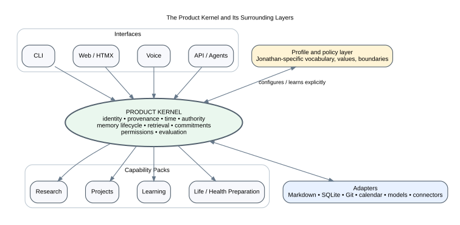
The kernel should not contain Jonathan’s categories as universal product ontology.
A bounded memory and continuity system for one finite or long-lived project.
Primary jobs: resumption, decisions, context, dependencies, handoff, research, experiments, change propagation.
Advantages: clear boundary, limited privacy scope, easier evaluation, portable artifact, plausible first reusable product.
Risks: may become another project wiki; difficult cross-project learning; identity and personal preferences remain external.
A longitudinal system across projects, life areas, learning, preferences, experiences, and personal operations.
Primary jobs: cross-domain continuity, prospective memory, identity/perspective over time, portfolio sensemaking, personalized collaboration.
Advantages: highest potential augmentation value and continuity.
Risks: privacy, psychological over-modeling, maintenance, context collapse, rigid identity, unclear authority boundaries.
A multi-perspective system for a team, household, organization, or collaboration.
Primary jobs: shared decisions, handoffs, rationale, conflicting viewpoints, responsibilities, institutional memory.
Advantages: high coordination value; clearer economic product.
Risks: access control, consent, speaker grounding, disputed authority, surveillance, deletion rights, concurrent editing, organizational politics.
These scales should share contracts where possible, but they are not merely deployment sizes. They have different social and epistemic requirements.
Several focused wedges could validate the kernel without requiring the entire vision.
Input: project artifacts and recent activity.
Output: cited re-entry capsule, changes while away, next action, handoff packet.
Kernel tested: identity, time, provenance, retrieval, context, commitments, evaluation.
Input: decisions, evidence, alternatives, corrections.
Output: current decision, history, conflicts, reconsideration triggers, impact.
Kernel tested: epistemic objects, authority, bitemporality, argumentation, propagation.
Input: papers, notes, experiments, questions, interpretations.
Output: evidence maps, competing hypotheses, purpose-bound syntheses, research gaps.
Kernel tested: source monitoring, perspectives, synthesis, consolidation, citation verification.
Input: Markdown/Git corpus.
Output: integrity, staleness, identity, propagation, conflict, recovery status.
Kernel tested: parsing, lineage, derived projections, diagnostics, evaluation.
The proof of concept suggests all four. Product discovery should determine which one produces the strongest recurring value and best platform learning.
A product architecture becomes concrete when quality attributes are expressed as scenarios.
After a failed derived-store rebuild, the prior valid index remains available, canonical sources remain unchanged, and the failure can be diagnosed from a manifest.
When an experiment result is corrected, a current query returns the corrected result, an as-known-then query returns the earlier belief, and the system shows when and why the correction was recorded.
When Jonathan and a collaborator interpret the same event differently, both stances remain attributable; a factual answer does not silently merge the perspectives.
When one project’s task state is migrated to SQLite, it can be exported and semantically reimported into an empty system, and authority can return to Markdown without losing history.
When a context pack is sent to a remote model, it contains only sources permitted for that destination, records the disclosure manifest, and excludes secrets and unrelated sensitive sections.
When stopping work, recording a useful transition takes under a minute and improves later resumption enough to justify the closeout cost.
When the system suppresses an old item from a default view, Jonathan can see why, reveal it, and change the policy.
When several items could interrupt Jonathan, the system explains their consequence, uncertainty, reversibility, novelty, commitment risk, and deferral cost; it does not use model confidence as the sole routing signal.
When an authorized action executes successfully at the tool boundary but the expected external state does not appear, the system reports the mismatch, preserves the prediction and observation, and initiates rollback or incident handling rather than declaring success.
When a model provider changes, canonical memory and evaluation cases remain usable, and the new model can be benchmarked without data migration.
When a provider, connector, index, or trusted context source is unavailable, the system names the missing capability, narrows permitted behavior, offers a bounded fallback, and records the recovery condition.
A mature system might feel transformative when Jonathan can:
These questions belong in the design studio, not in premature implementation commitments.
The supplied blueprint proposes a local-first modular monolith with ports and adapters, Markdown/Git narrative authority, a rebuildable SQLite read model, selected operational write models, and strict separation between evidence and control. That remains the strongest baseline architecture for the design studio.
The important change in this package is to distinguish the product kernel from the current implementation modules. The architecture should be organized around stable responsibilities and contracts, not around the order in which prototypes were built.
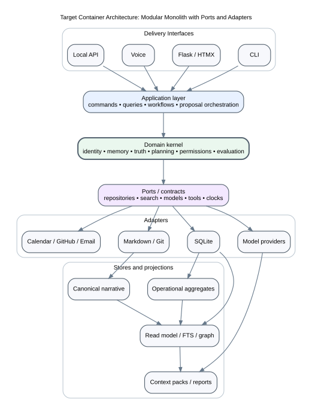
The architecture must allow Big Brain Time to be:
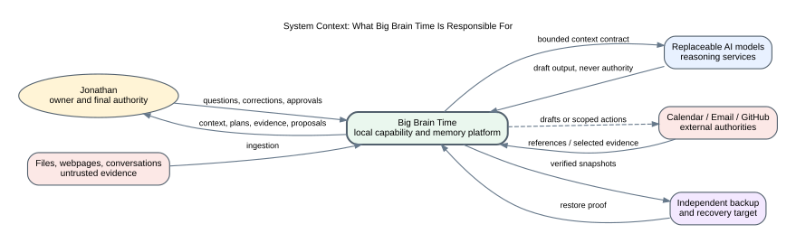
Jonathan is the owner, primary user, primary source of values and personal authority, and final approver of consequential changes. He authors, ratifies, revises, overrides, suspends, and deprecates methods and policies. The system may learn explicit preferences and interaction patterns, but it does not silently become the authority on Jonathan’s identity, goals, or commitments.
Big Brain Time owns the local product contracts, memory lifecycle, derived context, selected operational state, policies, evaluation artifacts, and user-facing continuity workflows.
Models are replaceable reasoning and language services. Their outputs are proposals or derived artifacts unless explicitly accepted. Models do not own canonical memory, permissions, or action policy.
Stakeholders, teams, communities, and counterparties are autonomous participants with their own values, interpretations, permissions, expectations, rights, memories, and capacity to disagree. They are not external systems to query or modify. Their statements and commitments remain attributable, and their participation is governed by consent and social authority as well as technical access.
Calendars, email providers, GitHub, health portals, financial systems, and organizational tools remain authoritative for their own records unless a bounded migration decision says otherwise.
Conversations, lived events, tacit knowledge, physical conditions, and effects on people may not be directly machine-observable. They enter through human capture, testimony, or later reconciliation. Absence from an API is not evidence that they did not occur.
Files, web pages, email, conversations, connector results, measurements, and model outputs enter as observations or source material with time, privacy, and trust boundaries. Interpretation, claim formation, corroboration, acceptance, and verification are distinct transitions. Retrieved content cannot issue runtime instructions.
Independent backups and restore procedures are part of the product architecture, not merely operations documentation.
Interfaces translate user interaction into application queries, commands, and proposals. They do not decide truth, authority, permission, or lifecycle.
The application layer coordinates use cases:
CaptureArtifactEstablishActiveFrameAllocateAttentionBuildReentryPackExplainCurrentStateCompileContextProposeSynthesisRecordDecisionAnalyzePropagationPrepareAndVerifyActionRepairCommonGroundEnterDegradedModeRequestPurgeEvaluateCapabilityIt manages workflows and transactions but delegates domain rules to the kernel.
The kernel contains stable concepts and policies:
The kernel should not import Flask, SQLAlchemy, GitHub, or model-provider types.
Ports express what the kernel needs without choosing implementation:
Adapters implement ports for Markdown, Git, SQLite, FTS5, embeddings, local or remote models, calendar, GitHub, email, filesystem, and other connectors.
Canonical authority is declared per information type. There is no single universal store.
Indexes, graph candidates, summaries, context packs, embeddings, dashboards, and compiled views are rebuildable or invalidatable. They carry manifests and lineage but are not sole authority for factual claims.
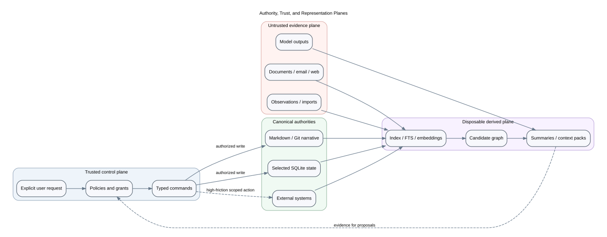
Three questions must be answered independently:
A Markdown decision record may be authoritative evidence and still be unable to authorize a tool. A model output may be useful derived text but have no authority. A calendar event may be externally authoritative but represented locally only by a reference.
| Class | Meaning | Examples |
|---|---|---|
| Canonical narrative | Human-readable durable meaning | decisions, research notes, journal, rationale |
| Canonical operational | Transactional current state | selected tasks, transitions, permission grants |
| External authority | Another system owns current record | calendar, email, GitHub issue, health result |
| Derived projection | Rebuildable query structure | FTS, section table, entity candidates, embeddings |
| Compiled artifact | Purpose-specific, invalidatable output | context pack, briefing, handoff, synthesis |
| Ephemeral staging | Temporary proposal material | extraction candidates, review cards, draft relations |
| Audit evidence | Durable record of process and change | approvals, hashes, results, incidents |
The source blueprint’s one-writer rule is crucial, but authority may be more granular than an entire document or database.
A project might be split as follows:
| Field or meaning | Authority |
|---|---|
| outcome and rationale | Markdown narrative |
| current operational status | SQLite aggregate after migration |
| external due date | calendar or work system |
| recent code state | GitHub repository |
| generated re-entry capsule | compiled artifact |
| AI interpretation of risk | proposal with source lineage |
This is safer than saying “the project is in SQLite” or “the project is in Markdown.”
Any migration must state:
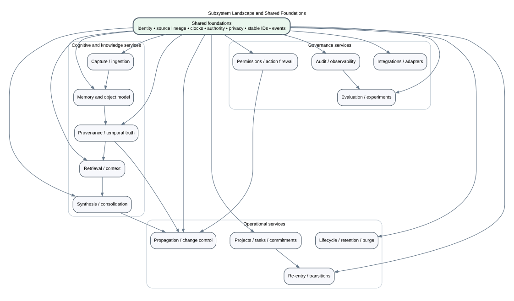
The following foundations should be implemented once and reused.
Stable identifiers for agents, artifacts, memory items, claims, commitments, transitions, proposals, activities, and evaluation runs. IDs must survive rebuilds and not encode mutable status.
At minimum:
Who or what created, observed, reported, inferred, transformed, accepted, or executed an item; what inputs and software versions were involved; and how the output derives from source.
Domain- and scope-specific source precedence, explicit decisions, perspective holders, and resolution behaviors such as choose, show both, abstain, or require review.
Classification, minimum-necessary disclosure, model destination, retention, redaction, and connector boundaries.
Draft, active, superseded, disputed, retracted, archived, suppressed, redacted, purged, expired, and invalidated are not interchangeable.
Every significant behavior can be connected to fixtures, run evidence, baselines, user corrections, and maturity state.
Purpose, protected commitments, open questions, assumptions, contradictions, attention budget, interruption threshold, participants, context gaps, and expiry conditions for the current cognitive episode.
Observed, interpreted, inferred, accepted, decided, verified, disputed, and superseded states remain distinguishable and carry source, scope, recency, contradictions, dependencies, and promotion authority.
Who knows what, which sources each participant has seen, current assignment, strengths, limitations, permissions, believed objective, and evidence of common-ground mismatch.
Dependency status, stale or missing context, model and policy version changes, unresolved incidents, degraded capabilities, fallback behavior, recovery conditions, and review load.
These four application concepts should remain distinct.
Requests information without changing canonical state.
Examples: ExplainCurrentDecision, SearchEvidence, BuildPreviewContext, ListPurgeImpact.
Requests a defined state change with validated intent and authority.
Examples: RecordTransition, AcceptMemoryItem, SupersedeDecision, ArchiveProject.
A reviewable possible set of commands, usually created by a human or model from evidence.
Examples: a patch set, a proposed relation, a synthesis draft, a reminder plan.
Records that an accepted command or external occurrence happened.
Examples: TransitionRecorded, DecisionSuperseded, ProposalRejected, IndexRebuilt.
The system does not require full event sourcing. Events are useful for projection, audit, and evaluation, while current aggregates may still be stored directly.
The architecture supports a closed control loop:
The active frame is control state, not a larger context pack. It determines what should enter the pack and what should be surfaced, deferred, challenged, or ignored.
Attention routing uses a declared policy over:
Model confidence is one diagnostic input at most. It does not reliably identify model error and must not become the default proxy for human-review value.
When collaborators appear to operate from different objectives, scopes, assumptions, or source sets, the workflow pauses propagation and action long enough to compare compact statements of:
Potential prompt injection, unsupported claims, suspicious source changes, circular citations, silent goal drift, policy violations, canonical disagreement, and confident low-context output trigger a governed response: label, quarantine, challenge, request corroboration, or escalate. Immune responses alter retrieval, promotion, and action eligibility but do not declare truth by themselves.
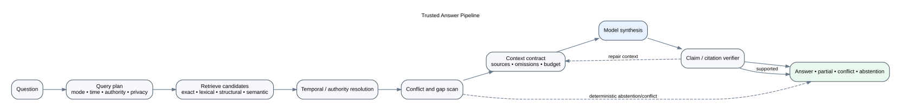
A trusted answer is not a single model call. It is a pipeline with inspectable intermediate artifacts:
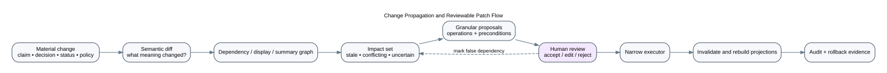
A meaningful change is represented semantically before being rendered as file or database operations. This prevents the implementation representation from hiding the intent.
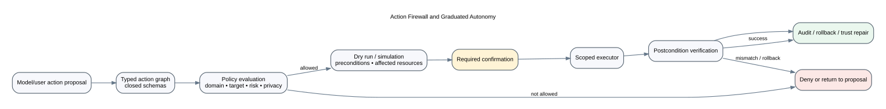
A model or user may propose an action graph. Completion requires the full lifecycle:
Read and write boundaries are separate. Observation is authorized and treated as potentially stale, incomplete, manipulated, or misinterpreted. Action is independently authorized. A tool response proves only what the tool can attest to.
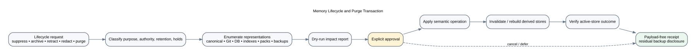
Visibility changes and destructive deletion use different workflows. Purge must enumerate all controlled representations and report residual backup retention honestly.
The design studio should preserve at least four plausible macro-architectures.
Description: Markdown/Git remains canonical for nearly everything; SQLite and AI are derived tools.
Strengths: maximum readability, portability, simple recovery, Git review.
Weaknesses: transactional operations, identity, concurrency, and structured lifecycle become awkward; parsing rules can become an implicit database schema.
Best fit: knowledge assurance, research, project context, single technical user.
Description: narrative and rationale remain Markdown; selected operational aggregates and policies are SQLite-canonical; external systems remain authoritative for their domains.
Strengths: matches representation to use, supports transactions, preserves narrative.
Weaknesses: authority matrix and export discipline become essential; users can be confused about where to edit.
Best fit: likely near-term target for Jonathan’s personal platform.
Description: durable semantic events and object records are canonical; Markdown becomes a projection/export for narrative views.
Strengths: strong temporal history, propagation, audit, multiple interfaces.
Weaknesses: high implementation and migration cost, loss of direct hand editability, complex deletion and compaction.
Best fit: only if operational breadth and multi-interface needs clearly exceed Markdown-centric approaches.
Description: each project or capability pack has a bounded local memory package; a portfolio layer indexes and compiles across packages.
Strengths: portable, privacy-scoped, reusable, easier productization and deletion.
Weaknesses: cross-project identity and learning are harder; duplicated kernel metadata; global personal continuity becomes a federation problem.
Best fit: promising productization path and useful comparison to one monolithic personal brain.
No option should be selected globally before scenario and quality-attribute analysis.
This remains the simplest and safest studio baseline.
Requires measured need, identity and conflict semantics, encrypted transport, schema migration coordination, and recovery testing. CRDTs or append-log replication are options, not defaults.
Requires consent, role-based and item-level access, speaker-grounded perspectives, deletion rights, organizational authority, and social conflict governance. This is a distinct product architecture.
Instead of relying only on review, the architecture should have executable or inspectable fitness functions:
The atlas describes Big Brain Time as a set of cooperating responsibilities rather than a list of current Python packages. Each subsystem card includes:
The boundaries are proposals. A studio exercise may merge, split, or remove them.
Accept low-friction raw material while preserving its original form, source, time, privacy, and context. Convert only useful portions into reviewable structured candidates.
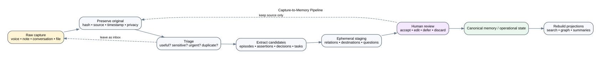
Raw text, audio transcription, Markdown, documents, email, webpages, connector records, application events.
Source artifact, capture event, extraction candidates, staging packet, discard/archive recommendation.
The preserved source is authoritative for what was captured. Extracted objects are derived until reviewed or structurally trusted.
Hashing, source identity, timestamping, privacy policy, file parsing, exact duplicate detection, allowed destination checks.
Candidate extraction, topic suggestions, ambiguity detection, suggested questions, semantic duplicate proposals.
Collect twenty real captures through the current flow. For each, record capture time, processing time, eventual use, incorrect routing, sensitive content, and whether structure added value. Compare immediate extraction with delayed processing.
Universal kernel service, but interaction and extraction policies belong in profiles and capability packs.
Represent useful mental and informational objects without forcing all of them into one factual claim taxonomy.
memory_item:
id: M-...
kind: episode | assertion | narrative | preference | value |
goal | plan | decision | question | simulation | procedure
content: ...
source_artifact: ...
created_or_experienced_at: ...
recorded_at: ...
privacy: ...
lifecycle: ...
Optional attached structures include stance, proposition, commitment, and relations.
Object kind does not determine authority. A remembered episode can be authentically Jonathan’s memory without establishing every external detail as fact. A decision can be binding without being empirically true.
Schema validation, identity, lifecycle, required fields by kind, source linkage, permission checks.
Suggested kind, stance, proposition, relations, ambiguity, narrative summary—always reviewable.
Select ten real items: a fact, observation, interpretation, preference, value, decision, plan, memory, question, and imagined scenario. Model them using the current claim system and the plural object proposal. Compare ambiguity, retrieval, editing burden, and user comfort.
Core kernel. This is the most consequential ontology decision and should remain deliberately small.
Explain where information came from, when it applied, when it was known, who held it, and how the system’s position changed.
Memory items, source artifacts, external records, accepted relations, correction events, authority rules.
Applicable-state result, alternatives, conflict set, evidence explanation, as-of history, observability gaps.
The resolver does not create truth. It applies declared scope, time, source, and decision policies and reports the result.
Interval logic, explicit relation traversal, authority-rule application, retraction filtering, cycle detection, output state selection where policy is complete.
Candidate proposition normalization, relation suggestions, scope questions, evidence relevance proposals.
Create five temporal cases from actual Big Brain Time history: correction, changing plan, historical preference, external authority update, and two legitimate perspectives. Manually produce current, as-known-then, and perspective-specific answers.
Core kernel, with domain-specific authority policies supplied by profiles and capability packs.
Find the evidence, objects, and relationships needed for a particular question—not merely similar text.
Query plan, read model, indexes, authority rules, source artifacts, lifecycle and privacy state.
Ranked evidence candidates, retrieval explanations, coverage gaps, conflict candidates, manifest.
Retrieval returns candidates. It never decides that a claim is true, contradictory, superseding, or safe to act upon.
Exact lookup, FTS, filters, budgets, stable result contracts, graph caps, manifest generation.
Query decomposition, paraphrase expansion, semantic reranking, global map/reduce synthesis—benchmarked and optional.
Build a living set of thirty real questions. Compare exact/FTS, FTS+metadata, FTS+links, and hybrid retrieval. Record evidence recall, noise, latency, privacy, and correction burden.
Core service with pluggable retrieval strategies and domain-specific query planners.
Compile an inspectable, purpose-specific evidence package for a human, model, workflow, or handoff.
Retrieval results, project/area configuration, privacy policy, time/authority resolution, context template.
Context manifest, human-readable body, evidence index, exclusions, staleness status.
A context pack is a compiled view, never the sole authority for factual content.
Contract validation, source selection policy, token accounting, deduplication, manifests, expiration, rendering order.
Compression, ordering suggestions, connective prose, task-specific explanation—only where loss is declared and lineage retained.
Take one real project and build three packs: re-entry, architecture review, and external-model handoff. Use the same source corpus and compare what each must preserve and omit.
Core kernel contract plus capability-specific compilers.
Create smaller or more general representations that improve future reasoning while preserving source lineage, exceptions, alternatives, and known loss.
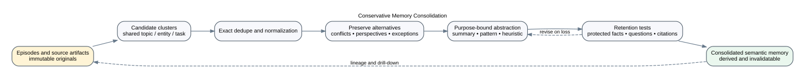
Source artifacts, memory items, relations, retrieval logs, task or question family, protected-content contract.
Derived synthesis artifact, lineage DAG, omission report, retention score, new hypothesis candidates, stale conditions.
Syntheses are derived by default. A new interpretation or generalization is a proposal, not verified evidence.
Exact duplicates, manifests, source hashing, invalidation, protected-value tests, idempotent writes.
Semantic clustering, abstraction, themes, candidate generalizations, counterexamples, compression.
Select one topic with ten to twenty heterogeneous sources. Produce an extractive digest, abstractive summary, and reflection. Test each against five future questions and a list of protected facts, disagreements, and exceptions.
Core contracts and evaluation; algorithms and prompts remain replaceable adapters.
Maintain orientation for the current cognitive episode and allocate scarce human and machine attention without turning every stored item into an interruption.
Values, goals, commitments, project state, epistemic ledger, source changes, context manifests, collaborator registry, health state, calendar references, interruption policy.
Inspectable active frame, ranked surfacing candidates, deferral record, context request, common-ground repair prompt, escalation, abstention, degraded-mode notice.
Jonathan controls goals, protected commitments, attention preferences, and interruption thresholds. Deterministic policies enforce declared hard constraints. Models may propose salience and explain tradeoffs but may not silently reprioritize goals or cancel commitments.
Expiry, deadline calculation, policy thresholds, source-set comparison, permission filtering, frame versioning, deferral persistence, health gates, and audit.
Propose relevance, identify possible contradiction or novelty, estimate missing context, draft common-ground summaries, and suggest attention tradeoffs.
For two weeks, maintain one compact active frame for a real project. Run every surfacing candidate through consequence, uncertainty, reversibility, novelty, commitment risk, deferral cost, and interruption cost. Compare it with recency- or confidence-based routing on useful-suggestion rate, missed commitments, correction burden, and unwanted interruptions.
Universal control-loop capability built on purpose, commitment, epistemic, collaboration, policy, and health contracts.
Represent what the user or system has committed to doing, why, under what constraints, and with what current state—without turning Big Brain Time into a brittle universal task manager.
Accepted decisions, user commitments, external dates, project narratives, transitions, review policies.
Current operational state, next-action candidates, dependency graph, planning views, exports, external drafts.
Selected operational fields may become SQLite-canonical after a bounded migration. Narrative rationale and external events may remain elsewhere.
State transitions, constraints, dependencies, recurrence calculations, export, audit.
Task decomposition, prioritization alternatives, blocker interpretation, plan proposals, negotiation prompts.
Choose one project for two real review cycles. Compare the current Markdown workflow with a minimal structured aggregate containing only outcome, status, milestone, next action, blockers, and transition.
Capability pack built on kernel commitments, time, identity, and policy.
Make interrupted or dormant work resumable with minimal cognitive startup cost.
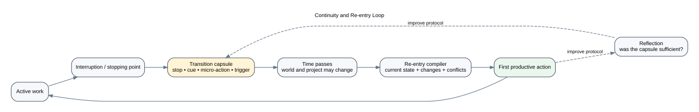
Project state, transition records, recent changes, decisions, tasks, external events, journal/retro references.
Re-entry capsule, stale-transition warning, first-action proposal, resumption measurement.
The recorded transition is authoritative for where the user intended to stop. The compiled capsule is derived and may need correction if the world changed.
Required-field validation, material-change detection, change window, source selection, expiration.
Concise phrasing, comparison of changes, open-loop summary, candidate next action when none exists.
Alternate manual and system-assisted transition records across six interruptions. Measure closeout time, resumption time, rereads, wrong first actions, and subjective burden.
Strong candidate for the first reusable project-brain capability.
Identify what a material change affects and prepare safe, understandable updates without silently rewriting history.
Accepted change, dependency graph, source links, displays, summaries, indexes, policy and authority rules.
Impact report, proposal bundle, unresolved questions, invalidation events, audit evidence.
Explicit human-authored dependencies may be canonical. Inferred edges remain derived until accepted.
Exact links, typed references, manifest dependencies, precondition hashes, affected-store invalidation.
Semantic dependency suggestions, impact explanations, proposed wording, missing-link detection.
Create ten seeded material changes across real documents and manually define expected impacts. Compare explicit links, textual references, typed IDs, and model suggestions.
Core change-control service with domain-specific dependency rules.
Control visibility, relevance, retention, correction, redaction, and destruction without confusing them.
Lifecycle request, item identity, retention policy, dependency graph, backups, authority and privacy rules.
Impact plan, approval requirement, updated lifecycle state, projection rebuild, deletion receipt, residual-copy report.
Only an authorized lifecycle operation changes or destroys canonical material. Low retrieval rank is never deletion authority.
Policy classification, representation enumeration, deletion transactions, projection invalidation, receipt and verification.
Candidate archive/suppression suggestions, preservation-value questions, semantic replica discovery—never autonomous purge.
Choose three synthetic items: ordinary obsolete note, retracted belief, and highly sensitive accidental capture. Walk each through suppress, archive, retract, redact, and purge impact plans.
Core kernel and governance service. Essential before broad personal or multi-user deployment.
Allow increasingly useful initiative without allowing evidence, model confidence, or broad credentials to become authority.
User request, proposal, grants, resource state, privacy class, tool schema, evidence manifest.
Allow/deny decision, required confirmation, prediction record, executed result, external observation, reconciliation status, verification, incident, audit, and rollback status.
Only the control plane creates grants. Retrieved content and model output cannot modify policy.
All authorization, target validation, risk ceiling, confirmation mode, path and recipient checks, action execution boundary, postcondition matching, and closure gate.
Propose and explain actions; never decide its own permission.
Create twenty action scenarios and ask Jonathan to predict allow, deny, or confirm. For each allowed scenario, record the expected external change and verification evidence; simulate technical success with a wrong real-world result. Redesign policy and closure language until expected and actual outcomes align.
Universal governance kernel, with domain-specific grants and executors.
Determine whether the system is correct, useful, safe, understandable, and worth maintaining; preserve enough evidence to repair failures and improve design.
Test fixtures, run manifests, active-frame history, prediction and outcome records, health transitions, user feedback, action events, incidents, metrics, retrospectives.
Scorecards, benchmark reports, maturity evidence, incident records, design decisions, deprecation recommendations.
Evaluation evidence supports decisions but does not replace human value judgments. Metrics must remain interpretable and revisable.
Fixture execution, integrity checks, metrics, version binding, hash verification, audit-chain validation.
Rubric assistance, failure clustering, qualitative synthesis, candidate regression cases—reviewed and calibrated.
For one capability, create a complete evidence packet: baseline, deterministic tests, benchmark, two-week pilot, corrections, burden, and a keep/revise/remove decision.
Universal kernel and design-process infrastructure.
Connect the kernel to storage, external systems, models, and user interaction without letting an adapter become the architecture.
Adapters inherit authority from the information type and policy. A connector does not become authoritative merely because it can write.
Serialization, validation, migrations, retries, idempotency, authentication boundaries, connector scopes.
Provider-specific inference only; no canonical state hidden in provider memory.
Implement one use case through application services, CLI, and a thin web page. Confirm equivalent behavior and no domain logic in interface code.
Adapters and product surfaces around the kernel; deliberately replaceable.
| Interaction | Typical failure |
|---|---|
| Capture → memory model | extraction turns ambiguity into certainty |
| Memory model → provenance | object kind and source mode are conflated |
| Provenance → retrieval | authority/time policy is applied after ranking instead of before |
| Retrieval → context | token budget hides necessary conflict or scope |
| Context → synthesis | summary becomes authority or loses exceptions |
| Commitments → active frame | urgency displaces a quiet obligation without explicit supersession |
| Artifacts → active frame | retrieval availability is confused with present salience |
| Active frame → collaborator | role, source set, or objective mismatch creates false agreement |
| Synthesis → planning | interpretation creates tasks without an accepted decision |
| Planning → re-entry | current status exists but restart cognition is missing |
| Change → propagation | dependency graph is noisy or incomplete |
| Propagation → action | proposal scope exceeds what the user understood |
| Execution → verification | tool success is mistaken for intended real-world outcome |
| Health → governance | degraded capability is reported but does not narrow permission |
| Incidents → methods | failure evidence accumulates without policy revision |
| Lifecycle → audit | deletion process retains the sensitive payload in logs |
| Evaluation → design | metrics reward feature behavior rather than capability value |
| Integrations → privacy | convenient connector imports exceed minimum necessary evidence |
These seams should receive more design attention than isolated module internals.
For each subsystem, mark:
must exist in kernel;capability pack;adapter;derived experiment;external authority;not yet justified.Then identify the three seams whose failure would most damage trust. Those seams should define the first architecture probes after the design phase.
A system intended to function as a secondary human brain must represent more than retrievable factual statements. It must support experience, source, perspective, meaning, preference, imagination, commitment, procedural skill, future intention, and revision.
The goal is not to simulate the biological brain literally. It is to borrow distinctions that help the product avoid known failure modes:
Conway and Pleydell-Pearce’s self-memory system describes autobiographical memories as transitory constructions shaped by an autobiographical knowledge base and the current goals of a working self. This suggests that a retrieved memory is not simply a fixed file returned unchanged; the cue, current purpose, and self-context influence what becomes salient.
Design implication: Big Brain Time should preserve source artifacts and historical records while treating each retrieval or narrative reconstruction as a purpose- and perspective-bearing activity. A generated “memory” should not overwrite the evidence from which it was constructed.
Reference: Conway & Pleydell-Pearce, 2000.
Source-monitoring research examines how people attribute information to perception, memory, inference, imagination, or another source—and how these attributions can fail.
Design implication: provenance should distinguish source mode, not merely store a URL. The system should be able to say:
Reference: Johnson, Hashtroudi, & Lindsay, 1993.
Research on the constructive episodic simulation hypothesis connects remembering past events with imagining possible future events.
Design implication: a secondary brain should support prospective and counterfactual memory objects, not only historical retrieval. It should be able to compose scenarios from prior episodes while marking them explicitly as non-actual.
Reference: Schacter, Addis, and Buckner, “Remembering the past to imagine the future” and related constructive episodic simulation work.
Complementary Learning Systems theory distinguishes rapid learning of individual episodes from slower integration that extracts shared structure while reducing catastrophic interference.
Design implication: capture and consolidation should have different speeds and authority. One new episode can be stored immediately; it should not instantly rewrite a durable generalization about Jonathan, a project, or a domain.
Reference: McClelland, McNaughton, & O’Reilly, 1995.
Distributed cognition and augmentation traditions emphasize that capability can belong to an organized system of people, representations, tools, and processes rather than to an isolated brain or computer.
Design implication: diagrams, checklists, context packs, decision records, prompts, and external tools are not merely storage. Their format and propagation affect the cognitive performance of the whole arrangement.
References include Hutchins’ Cognition in the Wild, Engelbart’s Augmenting Human Intellect, and Licklider’s Man-Computer Symbiosis.
Human–AI teaming research distinguishes reasoning, memory, and attention as foundational functions connected by meta-coordination and governance. Memory makes information available; attention determines what receives scarce processing now. The two should not be collapsed.
Design implication: Big Brain Time needs an explicit active cognitive frame and an attention-allocation policy. Surfacing should consider consequence, uncertainty, reversibility, novelty, contradiction, value sensitivity, endangered commitments, interruption cost, and deferral cost. Model confidence alone is not a reliable allocation rule.
Reference: Gonzalez et al., “Toward a science of human–AI teaming for decision making,” 2026.
People depend on communicated information and are therefore exposed to accidental error and intentional manipulation. Evaluating content without evaluating its source, context, plausibility, and supporting path is insufficient.
Design implication: observations, interpretations, claims, accepted working beliefs, decisions, and verified states must remain distinguishable. Suspicious sources, prompt injection, circular support, silent goal drift, and confident synthesis from inadequate context should trigger labeling, quarantine, corroboration, challenge, or escalation—not automatic acceptance.
Reference: Sperber et al., “Epistemic Vigilance,” 2010.
Transactive-memory research shows that collective memory includes knowledge about who is responsible for which knowledge and how to retrieve it. A forced division of responsibility can disrupt an established coordination structure.
Design implication: Big Brain Time needs a capability and context registry for human and AI collaborators: strengths, known limitations, information seen, current assignment, permissions, and believed objective. It also needs common-ground repair: a collaborator should be able to state its understanding of the objective and request correction.
Reference: Wegner, Erber, & Raymond, “Transactive Memory in Close Relationships,” 1991.
Truth Maintenance Systems preserve reasons for beliefs and revise dependent conclusions when assumptions change. Assumption-Based TMS work supports multiple mutually inconsistent assumption sets without forcing one global state.
Design implication: Big Brain Time can represent alternative design worlds, hypotheses, or plans as environments:
Environment: local single-writer system
assumptions: one primary workstation, no concurrent edits
implications: SQLite is practical; CRDT is unnecessary
Environment: collaborative project brain
assumptions: multiple offline writers, shared ownership
implications: conflict and replication semantics become core
This is more expressive than labeling one environment FACT and the other UNKNOWN.
References: Doyle’s Truth Maintenance System work and de Kleer’s Assumption-Based TMS.
BDI agent architectures separate informational state, motivational state, and committed action.
Design implication: Big Brain Time should distinguish:
Reference: Rao & Georgeff, 1995.
Formal argumentation represents arguments and attack relations and can yield more than one acceptable position depending on semantics.
Design implication: disagreement may require an argument graph: premises, conclusions, objections, undercutting evidence, assumptions, and accepted-under-policy status. A CONTRADICTS edge between two sentences is often insufficient.
Reference: Dung, “On the Acceptability of Arguments and Its Fundamental Role in Nonmonotonic Reasoning, Logic Programming and n-Person Games” (1995).
Recent work explores consolidation, forgetting, reconsolidation, knowledge graphs, multi-cue retrieval, dynamic organization, and memory safety. These papers are useful sources of mechanisms and test ideas, but they should not be treated as settled product architecture.
Examples:
Design implication: evaluate retrieval, test-time learning, long-range understanding, selective forgetting, multi-source evolution, and adversarial memory contamination separately.
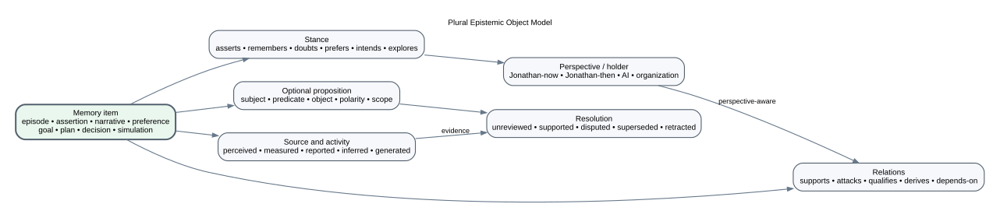
The current claim taxonomies are trying to answer several questions with one label. A more durable model separates dimensions.
What sort of thing is preserved?
How did the content enter the system?
How does an agent relate to the content?
Whose stance is represented?
Only truth-apt or logically comparable items need a normalized proposition:
subject: retrieval_pipeline
predicate: default_method
object: fts5
polarity: positive
scope:
project: big-brain-time
component: search
environment: local
population: null
A preference or narrative may have no useful proposition until a query requires one.
What is the system’s current relationship to the proposition?
This is not the same as object kind or confidence.
Motivational and operational objects form a typed chain:
values and identity
↓ guide
goals and desired outcomes
↓ justify
commitments and obligations
↓ constrain
plans, tasks, and actions
An AI collaborator may optimize or challenge a plan without silently redefining the goal that justified it. A new opportunity does not automatically supersede an existing commitment. A commitment ledger should record who promised what, to whom, why, by when, its current risk, and the explicit condition that cancels or supersedes it.
The world does not deliver clean evidence. It supplies observations, messages, measurements, documents, tool results, claims, and interpretations. The system should preserve the stages through which these become action-guiding state:
source or observation
→ interpretation
→ claim
→ corroboration or challenge
→ accepted working belief
→ decision to proceed
→ independent verification or supersession
Useful status distinctions include:
Confidence may accompany these states but cannot replace provenance, scope, contradiction, or authority.
The following is a conceptual model, not an immediate schema mandate.
memory_item:
id: M-204
kind: episode
content: "During the retrieval test, negation cases were easier to find with FTS5."
source_artifact: run://retrieval/e17
experienced_at: 2026-07-26T14:30:00-05:00
recorded_at: 2026-07-26T15:05:00-05:00
privacy: private
lifecycle: active
stance:
holder: agent.jonathan
toward: M-204
mode: interprets
content: "Lexical retrieval may need to remain primary for contradiction work."
valid_from: 2026-07-26
assertion:
memory_item: M-204
proposition:
subject: contradiction_retrieval
predicate: comparative_performance
object: fts5_better_on_seeded_negation_cases
resolution: supported_in_bounded_experiment
evidence:
- run://retrieval/e17
commitment:
id: K-19
kind: decision
content: "Keep FTS5 as the default baseline pending broader evaluation."
authority: agent.jonathan
status: active
reconsider_if:
- hybrid retrieval improves hard-case recall by the declared threshold
active_frame:
purpose: "Choose the next retrieval experiment."
protected_commitments: [K-19]
open_questions: ["Does hybrid retrieval improve the hard cases?"]
active_assumptions: ["The seeded cases resemble real queries."]
attention_budget: "one 45-minute review"
interruption_threshold: "new evidence that threatens K-19"
context_gaps: ["No longitudinal query sample yet."]
expires_on:
- material source-set change
- experiment decision recorded
collaborator_context:
collaborator: agent.retrieval_reviewer
assignment: "Challenge the experiment interpretation."
has_seen: [run://retrieval/e17, K-19]
strengths: [evaluation_design, contradiction_analysis]
limitations: [no_access_to_private_journal, no_lived_project_context]
permissions: [read, propose]
believed_objective: "Test whether FTS5 should remain the default baseline."
The episode, interpretation, assertion, decision, active frame, and collaborator context are related but not identical.
Specific events and experiences situated in time and context.
Examples: a meeting, failed deployment, conversation, discovery, emotional response, experiment run.
Product behavior: preserve source and context; retrieve by cues; support reflection and future simulation; avoid immediate generalization.
General concepts, definitions, patterns, and durable knowledge abstracted across episodes or sources.
Examples: how a system works, a learned heuristic, stable project architecture, a domain concept.
Product behavior: consolidate slowly; retain lineage and exceptions; invalidate after source change; distinguish accepted knowledge from proposed reflection.
How to perform a task or coordinate a workflow.
Examples: restore procedure, release checklist, research workflow, how Jonathan likes to close a project session.
Product behavior: version procedures; connect to demonstrations and outcomes; retrieve at action time; treat repeated success as evidence but not infallibility.
Remembering to perform an intended action when a time, event, context, or state occurs.
Examples: review a decision after a benchmark, prepare for a meeting, resume a project when a dependency clears.
Product behavior: connect commitments to triggers; preserve why the trigger matters; avoid notification overload; distinguish reminders from calendar authority.
The temporary, bounded control state needed for the current task.
Examples: current purpose, protected commitments, open questions, active assumptions, salient contradictions, attention budget, interruption threshold, context gaps, current roles.
Product behavior: compile purpose-specific views; explain surfacing and deferral; protect endangered commitments; expire or revalidate after material change; do not treat active context as durable memory automatically.
Who said, believed, preferred, promised, or understood what—and for which audience.
Examples: a partner’s preference, a team decision, an AI auditor’s concern, Jonathan’s earlier position.
Product behavior: retain speaker and audience; enforce consent and privacy; do not merge viewpoints into an artificial consensus.
Knowledge about how Jonathan and the system work together.
Examples: which explanation formats help, which alerts are intrusive, which closeout fields improve resumption, which tasks are repeatedly reconstructed.
Product behavior: human-reviewable, evidence-linked, time-bound, and easy to correct; never an opaque personality dossier.
Knowledge about who knows what, what each participant has seen, what each believes the objective is, and how to repair divergent understanding.
Examples: a researcher has read corpus A but not the decision history; an adversarial reviewer has read-only permission; two collaborators disagree about whether the goal is exploration or selection.
Product behavior: maintain explicit capability, context, assignment, limitation, and permission records; prefer independent context when correlated error is a concern; surface a compact “my understanding of the objective” repair when common ground appears broken.
Current and historical knowledge about the reliability and availability of the joint system itself.
Examples: stale index, changed model version, unavailable connector, corrupted canonical document, unresolved policy conflict, overloaded human reviewer.
Product behavior: bind health state to allowed behavior; name degraded capability and recovery path; prevent uncertain reconstruction from silently updating canonical records or taking external action.
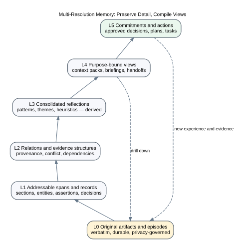
Verbatim source, durable within retention policy.
Sections, entities, assertions, decisions, tasks, transition fields.
Sources, provenance, support/attack, dependencies, scope, temporal relations.
Patterns, themes, heuristics, conceptual models. Derived and invalidatable.
Context packs, briefings, handoffs, re-entry capsules, decision exhibits.
Accepted decisions, active plans, tasks, permissions, and executed outcomes.
Information flows both upward and downward. A decision creates new experience; a view must allow drill-down; a new episode may challenge a reflection without deleting it immediately.
A brain-like system should not use one universal “truth mode.”
Purpose: determine a world-state assertion.
Policy: strict source, scope, time, authority, conflict disclosure, and abstention.
Purpose: reconstruct what was experienced or remembered.
Policy: preserve first-person source, distinguish memory from external verification, show later reconstruction where relevant.
Purpose: understand how different agents interpreted or valued something.
Policy: retain holders and audience; do not force one winner.
Purpose: consider hypotheses or design alternatives.
Policy: maintain assumption environments, evidence for/against, and uncertainty.
Purpose: select a commitment under evidence, values, and constraints.
Policy: make values, alternatives, authority, and reconsideration triggers explicit.
Purpose: explore a possible future or counterfactual.
Policy: mark assumptions and non-actual status; allow creative composition; exclude from factual retrieval unless explicitly requested.
Purpose: preserve meaning, voice, and temporal self-understanding.
Policy: minimal structural intrusion; source and privacy remain, but not every sentence requires classification.
A personal cognitive system inevitably contains a model of its user. The design must prevent that model from becoming rigid or invasive.
Every durable personal inference should include:
statement: ...
source_examples: [...]
created_by: ...
created_at: ...
validity: temporary | review_date | open-ended
status: proposed | accepted | rejected | superseded
uses_allowed: [...]
uses_prohibited: [...]
confidence_or_uncertainty: ...
reconsider_if: ...
Persistent memory creates a longitudinal attack and error surface. Repetition, biased feedback, noisy tools, or generated summaries can gradually reshape later behavior.
MemEvoBench and related emerging research call attention to “memory misevolution”: long-run drift from contaminated updates.
Big Brain Time should test:
Frequency, recency, and graph centrality must not become authority by accident.
The system should not pretend to decide truth autonomously. It should provide bounded responses to epistemic and control hazards:
This mechanism belongs across ingestion, retrieval, synthesis, collaboration, and action—not in one “safety model.”
“The meeting felt unproductive.”
The feeling is real as an experience. The explanation remains an interpretation or hypothesis.
“I prefer CLI tools.”
Store as a time-bounded preference, not a universal fact. Later evidence might show a preference for CLI during debugging and visual workbench during review. The narrower pattern qualifies the earlier generalization.
Decision: “FTS5 is the default retrieval baseline.”
Observation: “Hybrid retrieval improved three low-overlap cases.”
The observation does not automatically contradict or supersede the decision. It may support a reconsideration trigger or a domain-specific hybrid policy.
“Suppose Big Brain Time becomes a shared project brain for a nonprofit team.”
Create a simulation environment with assumptions, stakeholders, access rules, and predicted tensions. Do not let simulated participants or policies surface in current personal-system answers.
Jonathan remembers choosing a design because of privacy. A contemporaneous ADR says the primary rationale was reversibility. Preserve the remembered narrative and the record; do not silently “correct” the personal memory. A perspective answer can explain the difference.
As Big Brain Time grows, it cannot present every source artifact in every context. It needs smaller representations, but compression is never neutral. It changes what is easy to see, what appears important, which disagreements survive, and which future questions can still be answered.
The design goal is not maximum compression. It is:
Reduce coordination and retrieval cost while preserving the information, alternatives, source access, and uncertainty needed for a declared future purpose.
The Information Bottleneck method formalizes compression relative to a relevance variable: preserve the information in one signal that matters for another objective while discarding other detail.
For Big Brain Time, the practical translation is:
A lossy synthesis must name the question family, task, decision, audience, or capability it is optimized to support.
A project re-entry capsule, legal audit, research synthesis, emotional reflection, handoff packet, and executive brief have different protected information.
Reference: Tishby, Pereira, & Bialek, “The Information Bottleneck Method”.
The current prototype uses “synthesis” for a generated knowledge note. The product should distinguish several operations because their authority and loss differ.
| Operation | What it does | Loss risk | Default status |
|---|---|---|---|
| Index | Makes source addressable | none semantically | derived projection |
| Exact deduplication | Collapses identical payloads while retaining locations | low | automatic with manifest |
| Normalization | Standardizes dates, names, propositions, formats | low–medium | derived/reviewable |
| Extractive digest | Selects source excerpts | omission | compiled view |
| Abstractive summary | Rephrases and combines | omission + distortion | derived, cited |
| Comparative synthesis | Organizes agreements, conflicts, scopes, and gaps | framing | derived/reviewable |
| Reflection | Proposes meaning or pattern | creates new propositions | hypothesis/proposal |
| Generalization | Forms a rule or semantic memory across episodes | exception loss | proposed, slowly promoted |
| Decision synthesis | Selects a commitment under evidence and values | alternative loss | human-authorized decision |
| Procedure compilation | Converts successful practice into reusable steps | context loss | versioned procedure |
| Context compilation | Builds task-specific working memory | bounded omission | expiring compiled artifact |
| Purge/compaction | Removes representations or payload | destructive | separate lifecycle operation |
Calling all of these “summary” hides important controls.
Verbatim episodes, documents, conversations, records, events, and source artifacts. Protected by retention and privacy policy.
Sections, entities, assertions, decisions, tasks, transition fields, quotes, timestamps.
Support, attack, qualification, derivation, authority, scope, supersession, dependencies.
Themes, patterns, conceptual models, heuristics, community summaries. Derived and invalidatable.
Re-entry packs, briefings, handoffs, research exhibits, decision packets.
Accepted decisions, plans, tasks, permissions, and actions.
The system should be able to answer from a higher layer and drill down to lower layers. It should never need to discard L0 merely because L3 exists.
Every meaningful lossy artifact should carry a contract.
synthesis_id: syn.retrieval-architecture.2026-07-27
artifact_type: comparative_synthesis
purpose: decide_next_retrieval_experiment
audience: Jonathan
query_family: architecture_decision
as_of_valid_time: 2026-07-27T23:59:59-05:00
as_of_recorded_time: 2026-07-27T23:59:59-05:00
source_manifest:
corpus_revision: ...
items:
- source_id: ...
locator: ...
content_hash: ...
method:
stages:
- exact_dedupe
- extractive_evidence_units
- conflict_preserving_abstraction
model: ...
template_version: ...
protected_content:
- numerical_results
- dates_and_effective_periods
- decisions_and_rationale
- unresolved_conflicts
- minority_perspectives
- negative_results
- reconsideration_triggers
coverage:
required_units: [...]
preserved_units: [...]
omitted_units: [...]
unresolved_questions: [...]
loss:
class: lossy
known_risks:
- wording_and_tone_reduction
- omitted_low_relevance_examples
invalidation:
stale_when_child_changes: true
expires_at: null
The contract makes compression inspectable and testable.
No topic is consolidated merely because it has many notes. Name the future question, workflow, or decision.
Record source IDs, versions, time boundaries, and privacy. A moving source set produces unstable evaluation.
Identify facts, observations, interpretations, alternatives, examples, decisions, exceptions, and open questions. Preserve source locators.
Exact deduplication may be automatic. Near-duplicate equivalence remains reviewable when scope, time, or perspective differs.
Before abstraction, explicitly collect:
Create one or more of:
Do not mix them invisibly.
Ask whether protected units and representative future questions survive.
A reflection or generalization becomes durable only after acceptance. The source synthesis remains derived even when a resulting decision becomes canonical.
When material children change, mark the artifact stale. Do not silently mutate it under the same identity.
A readiness score should be an explanation, not a magic number.
Ready because:
- 14 candidate items from 5 sources and 4 sessions
- the same retrieval architecture explanation was reconstructed 6 times
- one architecture decision is pending
- source set has been stable for 10 days
Not fully ready because:
- one benchmark result is unreplicated
- the privacy implications of local embeddings remain unresolved
Protected information depends on purpose, but certain categories deserve strong defaults.
A good synthesis should be evaluated by retained capability, not aesthetic coherence.
Several timing strategies should remain open.
Safest and easiest to understand. May miss recurring opportunities.
The system notices a possible cluster and asks whether synthesis would help. Requires good precision.
A scheduled process proposes deduplication, clusters, conflicts, and reflection candidates. Emerging agent-memory research explores sleep-like consolidation, but Big Brain Time should initially run this as a non-canonical report.
Create a temporary synthesis only when a question requires it. Reduces stored summaries but may be slower and less stable.
Material changes mark affected syntheses stale; regeneration remains explicit or scheduled.
A likely hybrid is: explicit or retrieval-time synthesis, with periodic candidate discovery and deterministic invalidation.
Managed-forgetting research emphasizes reducing prominence and controlling retrieval rather than erasing all history. Big Brain Time should separate visibility from preservation.
A ranking or view signal based on current relevance, project membership, access, open dependencies, review dates, and explicit pinning.
Rule: buoyancy affects default visibility, never truth or retention by itself.
A separate policy reflecting historical, legal, emotional, safety, explanatory, or recovery importance.
An old item can have low buoyancy and high preservation value.
Every persistent artifact, rule, alert, task, collaborator record, and derived view consumes storage, review, retrieval, contradiction, dependency, privacy, and attention capacity. Creation therefore carries a future maintenance claim.
A useful default principle is:
No persistent artifact without expected future retrieval, accountability, coordination, or learning value.
This is not an automatic deletion rule. It is a requirement to name why an artifact should remain cognitively alive, what may decay or be suppressed, who bears the review cost, and which event should trigger re-evaluation.
| Operation | Meaning | Reversible? | Payload retained? |
|---|---|---|---|
| Hide/filter | Exclude from one view | yes | yes |
| Suppress | Lower default retrieval/notification | yes | yes |
| Archive | Remove from active operation | yes | yes |
| Expire | Artifact no longer valid for reuse | regenerate | yes or policy-dependent |
| Supersede | Prefer a later applicable item | yes conceptually | yes |
| Retract | Withdraw endorsement | yes with history | yes |
| Redact | Remove protected payload but retain structure | partly | no for redacted portion |
| Delete representation | Remove one file/cache/row | depends | may exist elsewhere |
| Purge semantic item | Remove controlled canonical and derived copies | generally no | no in controlled active stores |
| Crypto-erase | Destroy access by destroying encryption key | generally no | ciphertext may remain |
| Unlearn | Remove influence from a trained model | difficult/uncertain | separate problem |
These terms should become product verbs, not implementation details.
The current locked ADR says claims are never deleted or mutated. That is appropriate for ordinary epistemic correction but too absolute for privacy and user control.
Proposed revised law:
Meaningful epistemic correction is append-oriented and never silently destroys history. Authorized redaction or purge is a separate, explicit, scope-limited lifecycle operation with impact enumeration and honest residual-copy reporting.
Use append-oriented correction for:
Use purge or redaction for:
Specify item, semantic scope, reason, and desired operation.
Determine authority, legal/ethical hold, privacy class, and whether suppression, retraction, redaction, or purge is appropriate.
Search:
Show what will be removed, invalidated, retained, or left in expiring backups.
Destructive scope requires explicit, fresh approval. Retrieved evidence cannot authorize it.
Redact or purge canonical payload, then remove or invalidate derived copies.
Rebuild read models and summaries from remaining sources.
Search active stores for identifiers, hashes, and known fragments. Verification is evidence, not proof of universal erasure.
Record who authorized the operation, scope, time, policy, and residual retention—without retaining the sensitive payload.
Deleting a working-tree file does not erase Git history or every clone. Sensitive-data removal may require history rewriting, remote coordination, and invalidating prior references. Backups may retain encrypted copies until expiration.
The product should never claim immediate universal deletion unless the storage and key architecture actually supports it.
Possible long-term mechanisms include:
Purpose: restart a project.
Protect: current milestone, recent decision, blocker, stop point, first action, changes while away.
May omit: old completed tasks, broad background, superseded detail.
Must disclose: stale transition and unresolved status conflicts.
Purpose: choose the next experiment.
Protect: source quality, methods, effect boundaries, negative results, disagreements, assumptions, open gaps.
May omit: repeated introductions and secondary descriptions.
Must not: convert a preprint result into a universal architecture rule.
Purpose: understand a recurring experience.
Protect: authentic voice, episode diversity, exceptions, emotional context, time.
May omit: logistical repetition.
Must not: create a stable personality fact without review.
Purpose: another model begins the correct work quickly.
Protect: objective, current revision, verified state, open obligations, permitted paths, commands, stop conditions.
May omit: transcript history and redundant rationale.
Must disclose: staleness and unverified status.
Big Brain Time’s most consequential choices are not simple feature decisions. They are tensions among desirable qualities. Choosing one side too early can create an architecture that works beautifully for one interpretation of the product and poorly for another.
This document uses Questions–Options–Criteria (QOC) to keep design spaces visible. QOC represents:
The original QOC work argues that design rationale should be constructed alongside the artifact so that later redesign and reuse can understand not only what was selected but what alternatives existed.
Reference: MacLean, Young, Bellotti, & Moran, 1991.
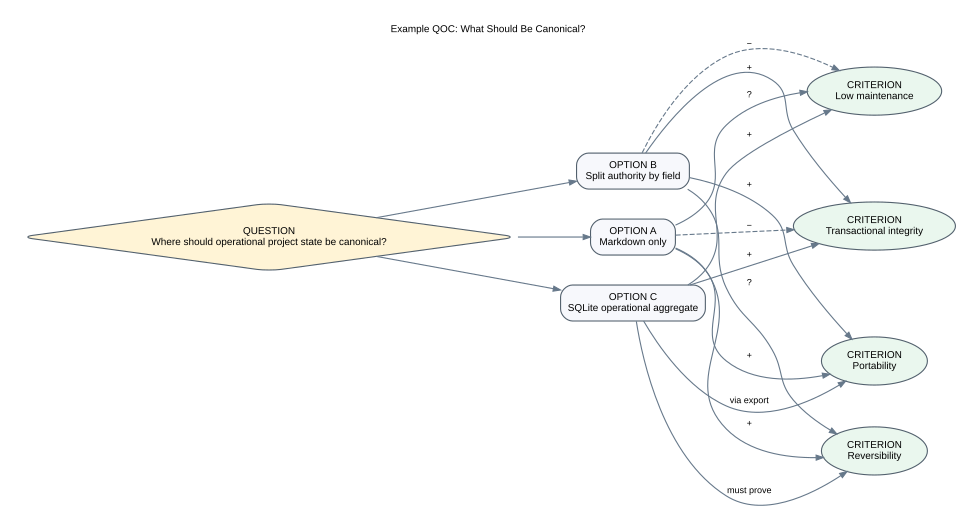
The goal is not to produce a diagram for every minor choice. Use QOC where a decision is poorly understood, value-laden, difficult to reverse, or likely to recur.
How strict should Big Brain Time be about classifying and verifying stored material?
A. Universal epistemic claim system
Every durable statement receives a claim type and resolution status.
B. Free-form memory with factual checks only at answer time
Store authentic material with source and time; extract claims when needed.
C. Plural object model with mode-specific gates
Represent episodes, narratives, preferences, goals, plans, decisions, assertions, and simulations separately; apply strict adjudication only to truth-apt answers and actions.
Option A supports assurance but risks over-classification and ontology drift. Option B preserves authenticity but weakens proactive contradiction and temporal reasoning. Option C best matches the larger product thesis but requires a carefully bounded kernel.
Prototype C while preserving current source text. Do not migrate every old marker until real examples establish the model.
Model ten heterogeneous real items with A, B, and C; compare ambiguity, capture effort, query quality, and user comfort.
Should knowledge be decomposed into small semantic units or preserved as documents and narratives?
Total atomization loses framing, ambiguity, and voice. Pure document storage makes propagation and precise reasoning difficult. Option C is the strongest baseline: originals remain authoritative; structured projections are selectively created and always link back.
Option C can quietly become dual authority if structured edits and prose edits both change the same meaning.
Choose one complex design conversation. Preserve the transcript, create a narrative summary, and extract atomic objects. Test future questions using each representation alone and in combination.
Where should durable state be canonical?
The source blueprint already recommends A as the starting point and B as a likely evolution. The design studio should also evaluate D because project brains may be more reusable and deletable than one monolithic personal corpus.
Do not decide by storage technology. Decide per capability scenario and exact semantic fields.
Run one project aggregate under A and a separate copy under B for two review cycles. Measure edits, drift, export, recovery, and understanding.
Should meaningful records ever be deleted?
C is the most defensible. Ordinary correction preserves history; destructive operations remain separate, explicit, scoped, and honestly limited by backup realities.
Walk one correction, one obsolete task, one sensitive accidental capture, and one third-party record through all four policies.
How much processing should occur at capture time?
A and B represent familiar failure modes: forgotten inboxes and burdensome forms. A C/D hybrid is promising: preserve a safe minimum, triage cheaply, and invest in structure only when a future use or repeated pattern justifies it.
Collect twenty captures under immediate structured processing and twenty under delayed/on-demand processing.
How much information should be supplied to a human or model?
C is the current architectural center. D may improve difficult workflows but introduces iterative tool and policy complexity. A remains useful as a global audit baseline, not normal memory.
Compare C and D on ten questions where relevant evidence is distributed or weakly lexical.
Should consolidated summaries be durable artifacts?
C and D deserve comparison. Durable prose is useful when it embodies accepted human understanding or is repeatedly used. Generated orientation text should usually be reconstructible.
Track one topic for a month under stored and on-demand synthesis. Measure stale artifacts, repeated generation cost, corrections, and reuse.
Where should generative or probabilistic reasoning enter the pipeline?
C best fits the ambition if “propose” remains literal. B is a strong baseline and safe fallback. D may improve critique but can multiply cost and shared biases; it must be benchmarked against a single well-prompted model plus deterministic checks.
Use the same ambiguous reconciliation cases with B, C, and D. Compare false resolutions, review time, and explanation quality.
How should Big Brain Time operate across devices?
B may provide most practical value without committing to concurrent writes. Instrument actual device conflicts before selecting C. D is a different trust and business model.
Run a three-month multi-device need log: capture urgency, offline use, concurrent edits, conflicts, and missed opportunities.
How should the system learn about the user?
C with some D is the preferred direction. Global inferences should be rare; context-specific behavior may be safer and more accurate.
Take ten proposed personalization claims. Ask whether Jonathan recognizes them, wants them stored, and permits each intended use.
When should the system initiate?
Start with B and shadow-mode C, while using D to explain candidate ranking inside the batch. Confidence-only routing is not an acceptable baseline: a model may be highly confident on exactly the cases where human attention is most valuable. E requires mature consent, policy, common-ground repair, health-aware behavior, and evaluation and may never be appropriate for some domains.
Generate candidate alerts silently for four weeks. Compare recency-, confidence-, and active-frame-based ranking. Label each useful, late, redundant, wrong, intrusive, already known, goal-drifting, or commitment-protecting; record both missed commitments and attention cost.
Should Big Brain Time be one longitudinal system or a federation of bounded brains?
C is a strong long-term hypothesis. It allows projects to be portable and shareable while a personal layer holds values, preferences, and cross-project continuity. The boundary must prevent private personal context from leaking into shared packages.
Package one project as if another person must use it without access to Jonathan’s private corpus. Record which kernel/profile dependencies appear.
How much should all capability packs share?
B is the preferred hypothesis: identity, source, time, authority, privacy, lifecycle, memory items, commitments, proposals, and evaluation are shared; domain meaning remains in capability packs.
Model one research workflow, one project workflow, and one learning workflow. Identify only fields and rules genuinely common to all three.
How rigid should the data model be?
C is likely for canonical structured objects; D remains valuable for narrative source. Strictness belongs at stable boundaries, not every exploratory idea.
Evolve the same sample objects through three requirement changes under A, B, and C; compare migrations, lost meaning, and validation.
How much provenance, uncertainty, and policy should the interface show?
C plus D: concise default output, visible status and key caveats, one-step evidence drill-down, and specialized audit views when needed. The active frame should expose why an item is salient now without requiring the user to inspect the entire epistemic ledger.
Mock the same answer in all four styles and test comprehension, confidence, time, and correction detection.
Is the primary goal to optimize Jonathan’s system or to build a reusable product?
C preserves the living laboratory while preventing Jonathan-specific assumptions from silently becoming universal. D may be a viable intermediate surface.
Give one bounded project-brain package and setup guide to another technically comfortable user. Observe what they understand, change, and reject.
Score each tension 1–5 on:
Prioritize high-impact, high-uncertainty tensions with cheap probes. Do not prioritize a tension merely because its technology is interesting.
QUESTION:
Why does it matter now?
What scenario exposes it?
OPTIONS:
A.
B.
C.
Current implementation as an explicit option:
CRITERIA:
- user capability
- reliability
- privacy
- reversibility
- maintenance
- explainability
- adaptability
- cost
EVIDENCE:
Current-system observations:
Research:
Assumptions:
ASSESSMENT:
Which criteria does each option support or challenge?
What evidence is missing?
PROBE:
What is the smallest experiment that can change our preference?
DECISION STATUS:
open | exploring | provisional | accepted | rejected | superseded
Research should help Big Brain Time make better design choices, not provide intellectual decoration or justify a preferred architecture after the fact.
For each thread, distinguish:
A primary paper, standard, or official technical source is preferred. Recent preprints are useful for mechanisms and benchmark ideas but receive lower design authority until replicated or locally demonstrated.
Score research questions by:
expected decision impact
× uncertainty reduced
× number of dependent design choices
× safety or privacy significance
÷ research and evaluation cost
The first priority is not the most novel topic. It is the question most likely to change a material product choice.
How should a personal system preserve experiences and self-understanding when autobiographical memory is constructive, purpose-sensitive, and connected to current goals?
A secondary brain can become harmful if it treats past descriptions as immutable identity facts or “corrects” personal memory solely from external records.
Select five journal or project episodes that Jonathan now interprets differently. Create source view, historical perspective, current perspective, and factual record view.
Human-memory theories are explanatory frameworks, not direct software specifications.
How should Big Brain Time learn general patterns from experiences without allowing one event or one generated summary to rewrite durable understanding?
This is the foundation for synthesis, personalization, learned procedures, and long-term memory growth.
Take one recurring workflow with six episodes. Build a proposed procedure after episode one and after all six. Compare errors and exceptions.
How can the system distinguish what happened, what was perceived, what was remembered, what was reported, what was inferred, and what was generated—across valid and recorded time?
Most trust failures in a longitudinal AI system are source/time failures before they are language-generation failures.
Build a five-case temporal/provenance fixture from real repository history and hand-check current, historical, and source-specific answers.
How should Big Brain Time preserve alternatives, revise dependent conclusions, and explain disagreement without pretending that every conflict has one immediate winner?
Architecture, research, personal interpretation, and group decisions frequently contain assumptions and competing arguments rather than isolated factual claims.
Model one contested architecture decision using flat claims, an ATMS-like assumption environment, and QOC/argument structure. Compare explanation and change impact.
Which competencies and failure modes should be used to evaluate a persistent AI memory system?
Static retrieval accuracy is not enough. A useful memory system must update, understand long-range interactions, forget selectively, apply memory to action, and resist gradual contamination.
Create a streaming benchmark of twenty interactions where facts, preferences, decisions, and sources change. Include misleading repetitions and tool noise.
These benchmarks are new and often preprint-stage. Use them to broaden evaluation, not to select an architecture by leaderboard.
How can the system reduce information while preserving the capability needed for a declared task?
Synthesis and context compression are central to scale, but they can create false coherence, hidden omissions, and stale authority.
Use one source set to produce re-entry, decision, research, and public-sharing syntheses. Compare protected units and omissions.
What retrieval architecture works for exact, temporal, multi-hop, global, and low-overlap questions at different corpus sizes?
A long context window is not a reliable substitute for memory. Retrieval failure can produce confident synthesis failure.
Maintain an evolving real-question set and benchmark exact/FTS, metadata, links, embeddings, and hierarchy at 100, 1,000, and simulated 10,000 documents.
Use R04, R11–R16, R31–R32 in the supplied bibliography.
How can Big Brain Time help remember and resume intentions without weakening judgment, skill, or attention?
Re-entry is the product’s strongest practical wedge, and prospective memory connects stored context to future action.
Run a within-person interrupted-work study comparing no capsule, manual capsule, and system-assisted capsule. In a second phase, compare confidence-only, recency-only, and active-frame attention routing.
Use R23–R26 in the supplied bibliography; Gonzalez et al. (2026) on reasoning, memory, attention, and meta-coordination; and Xu et al. (2026) on the limits of confidence-based human routing.
How does the whole human–AI-artifact system change over time, and which representations improve or damage coordination?
A local metric such as answer accuracy can improve while overall maintenance, verification, or dependence worsens.
Track one workflow for eight weeks: time, corrections, repeated explanation, maintenance, reliance, attention switching, common-ground failures, health degradation, satisfaction, and what Jonathan stops remembering internally.
Use R20–R22 and R28–R30 in the supplied bibliography; Wegner, Erber, and Raymond (1991) on transactive memory; and Woods (2018) on graceful extensibility.
How should visibility, retention, retraction, redaction, purge, backup expiry, and model influence differ?
A system intended to remember for years must also support user control and prevent old or sensitive material from exerting unwanted influence.
Build lifecycle impact plans for synthetic ordinary, historical, sensitive, and shared records.
Use R27/R27B in the supplied bibliography, NIST media-sanitization guidance, and GitHub’s sensitive-data removal documentation.
How can the system move from retrieval to suggestion, preparation, monitoring, negotiation, and limited action without becoming unsafe or intrusive?
Proactivity is a major source of potential value and a major threat to agency, privacy, attention, and trust.
Run two read-only monitors in shadow mode and twenty permission-comprehension scenarios before enabling any new action. For each action, record predicted state, simulated tool response, independently observed state, and the required reconciliation when they differ.
Use R17–R22, R35, the supplied safety document, Horvitz’s mixed-initiative principles, Sperber et al. (2010) on epistemic vigilance, and the NIST AI RMF lifecycle monitoring and incident-response outcomes.
What process best supports a complex, long-lived design whose requirements emerge through use?
The project can fail through endless platform work, rapid code accumulation, or undocumented alternatives even when individual modules are technically sound.
Take one subsystem decision through the full design-studio method and compare it with the previous rapid milestone process.
What changes when memory belongs to a project, team, household, or organization rather than one person?
Productization toward shared brains introduces speaker grounding, audience sensitivity, access, consent, authority, and social conflict—not merely more users.
Package one real project for another collaborator. Include separate personal, shared, and externally authoritative layers.
Multi-user support is a social-governance redesign, not a database scaling feature.
RESEARCH QUESTION:
Decision(s) it can change:
Current assumption:
SOURCE SET:
Primary research:
Standards/official documentation:
Current-system evidence:
Contrary evidence:
SUPPORTED FINDINGS:
1.
2.
BOUNDARIES AND UNCERTAINTY:
DESIGN IMPLICATIONS:
OPTIONS STILL OPEN:
LOCAL PROBE:
RECONSIDER WHEN:
Big Brain Time combines product discovery, cognitive modeling, information architecture, software architecture, AI evaluation, personal knowledge management, privacy, and experimental self-use. A normal feature backlog is not enough to govern that complexity.
The source roadmap already contains strong delivery principles: acceptance tests before implementation, read-only before write, deterministic before model-driven, inspectable artifacts, evidence gates, and permission-scoped autonomy. The design studio adds methods for preserving alternatives, selecting risks, and learning from real use before hardening the architecture.
The proposed method combines four traditions:
References:
The current project history demonstrates how quickly implementation tasks can dominate. The design phase should maintain four connected backlogs.
Raw evidence from real use:
An observation is not immediately a requirement.
Questions about product meaning, architecture, interaction, or policy.
Example:
When a user expresses a personal preference, should the system store the exact episode, a generalized preference, or both, and how does that preference expire or change?
Probes capable of changing a design preference.
Example:
Compare episode-only, generalized-preference, and context-specific-preference representations across ten real preference queries.
Production or prototype work that executes an accepted design or experiment.
Implementation items should name the question or decision they serve. Orphan implementation tasks are a scope smell.
Record what happened before interpreting it.
observation_id: OBS-BBT-...
date:
workflow:
context:
what_happened:
expected:
actual:
source_artifacts:
impact:
initial_interpretations: []
Define the friction, affected users, capability, and consequence. Separate symptom from cause.
Questions:
Turn broad desires into scenarios.
Source: Jonathan returning to a project after 60 days
Stimulus: asks for the fastest trustworthy re-entry
Environment: repository changed in the interval
Artifact: re-entry and context subsystems
Response: compiles current state, changes, conflicts, first action
Measure: under 5 minutes to productive work; no stale decision presented as current
Quality scenarios prevent terms such as “robust,” “brain-like,” or “safe” from remaining aesthetic.
Review current system evidence, relevant research, standards, and comparable designs. Produce at least two credible options and criteria.
Do not ask research to choose values that belong to Jonathan. Research can show likely effects; it cannot decide how much capture friction or privacy risk he accepts.
Identify the uncertainty most likely to invalidate the design.
Examples:
The next probe should address this risk, not implement the most visible screen.
A probe should be:
Possible probes:
Run the probe on real or representative work. Do not demonstrate only the happy path.
Include:
Measure technical and human effects.
Technical:
Human/system:
Possible outcomes:
Update:
Before a major implementation commitment, create a short packet.
decision_id: ADR-BBT-...
title:
status: proposed | provisional | accepted | rejected | superseded
scope:
owner:
date:
problem:
capability_scenario:
current_implementation:
options:
- id: A
description:
- id: B
description:
criteria:
- value
- reliability
- privacy
- reversibility
- maintenance
- adaptability
research_basis: []
current_system_evidence: []
experiment_evidence: []
choice:
rationale:
tradeoffs:
risks:
non_goals:
migration_effect:
acceptance_or_fitness_functions: []
reconsider_if: []
The packet should fit in a few pages. Supporting research and experiment reports can remain separate.
A question exists; options may not yet be complete.
Research or probes are active. No production commitment.
A bounded direction is preferred for the current scenario, but evidence is limited.
The direction governs implementation in a declared scope.
Sustained use supports reliance in a declared scope.
Policy permits the design to perform a declared effect.
An option is not selected; preserve rationale and reconsideration conditions.
A later decision replaces or narrows an earlier decision while preserving history.
“Locked” should be rare and mean process protection, not immunity from new evidence.
Methods and policies are evolvable governance artifacts, not a fixed constitution handed to Jonathan by the system. Their hierarchy should distinguish:
Jonathan may author, grant provisional status, ratify, amend, override, suspend, or deprecate a method. Incidents challenge it; evaluations support or weaken it. Every method record should name scope, status, author/authority, version, evidence, exceptions, supersession, review date, and fallback.
No policy may modify its own authority or convert a model proposal into ratification.
At major boundaries, run a small ATAM-inspired workshop—even if Jonathan and AI occupy multiple roles.
Use context, container, authority, data-flow, and lifecycle views.
Example:
Trustworthiness
├── temporal correctness
├── source/citation correctness
├── epistemic-state integrity
├── verified external outcomes
├── recoverability
└── predictable action boundary
Usability
├── capture friction
├── time to re-entry
├── interruption and attention cost
├── correction effort
└── maintenance burden
Resilience
├── visible dependency and context health
├── behaviorally enforced degraded modes
├── bounded fallback
└── explicit recovery path
Rank by importance and architectural difficulty.
Identify:
Do not convert every risk into a large implementation task.
A single-person project still benefits from role separation.
Every collaborator assignment should also declare:
When the objective, scope, or source set appears inconsistent, the collaborator initiates common-ground repair before propagating a decision or taking action.
One person or model can hold multiple roles, but not invisibly in the same reasoning step.
Documents should be organized by responsibility.
Do not use a single combined blueprint as the only editable artifact. A combined document is a compiled reading view.
Use a lightweight chain:
observation
-> design question
-> capability/quality scenario
-> option space
-> research and probe
-> decision
-> requirement/fitness function
-> implementation
-> run evidence and live feedback
Not every minor change needs the entire chain. Use it for high-impact, unclear, or hard-to-reverse choices.
A decision depends on an unverified or outdated claim.
Record:
A prototype shortcut obscures the intended responsibility or creates a second authority.
Record:
The current artifact cannot explain its own status, source, or relationship to implementation.
The response is not automatically more documentation. It may be deletion, consolidation, or a better generated view.
A suggested cadence during the design phase:
Resume substantial implementation only when all are true:
The design phase can close when Jonathan can answer:
Big Brain Time is powerful partly because it is grounded in Jonathan’s real corpus, habits, language, projects, and willingness to edit Markdown and inspect technical artifacts. Those conditions cannot be assumed for another user.
Productization should therefore not mean “make Jonathan’s entire system configurable.” It should identify which concepts are universal, which are profile-specific, which are capability-specific, and which are artifacts of the current prototype.
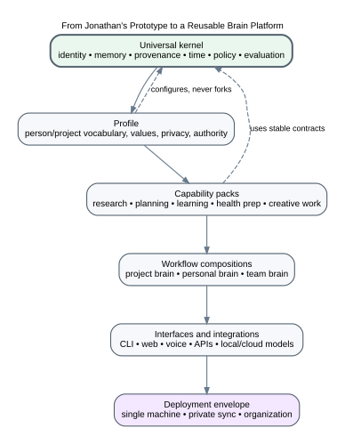
The kernel should remain small and domain-neutral.
Candidate contracts:
AgentPerspectiveSourceArtifactActivityMemoryItemStanceAssertionEpistemicStateGoalCommitmentActiveFrameAttentionPolicyCollaboratorContextRelationLifecycleStateAuthorityRuleContextContractProposalPredictionPermissionGrantVerificationIncidentSystemHealthDegradedModeMethodPolicyEvaluationCaseRunEvidenceUniversal infrastructure:
A profile configures the kernel for a person, project, group, or organization.
It contains:
A profile is inspectable data, not hidden model weights.
A capability pack combines domain semantics, workflows, views, prompts, evaluation cases, and integrations.
Examples:
A pack may define its own object payloads and policies while using kernel identity, provenance, time, lifecycle, context, permission, and evaluation contracts.
A product experience may combine several packs.
A “project brain” might use:
A “learning brain” might use:
Interfaces remain thin over the same use cases. Packs should not create separate memory systems for voice, web, or agents.
The same product contracts may operate as:
Deployment changes security and social assumptions and must be explicit.
A portable, local-first package that preserves project outcome, state, decisions, evidence, research, handoffs, transitions, and evaluation.
Target user: individuals or small technical teams managing long-lived complex projects.
Core promise: return after a gap or hand off to another person/model without reconstructing the project.
Why promising: bounded scope, measurable value, easier privacy and deletion, natural Git integration, directly grounded in the current prototype.
Minimum capabilities: source inventory, decision/rationale records, re-entry capsule, context pack, search, change impact, export.
A local evidence and synthesis environment for papers, notes, experiments, competing hypotheses, and research questions.
Core promise: preserve evidence and perspective while producing purpose-bound, cited syntheses that can be updated rather than rewritten from scratch.
Why promising: strong differentiation from generic note apps; tests epistemic plurality and consolidation.
Risks: research source ingestion and citation fidelity; users may prefer established tools; synthesis value must exceed workflow overhead.
A CLI/library/workbench that audits a Markdown or document corpus for identity, links, staleness, temporal conflict, source gaps, and context-pack readiness.
Core promise: make an existing knowledge base trustworthy enough for human and AI use.
Why promising: narrow, technical, compatible with many existing systems, less invasive than replacing storage.
Risks: diagnostic precision and false-warning fatigue; difficult to generalize beyond opinionated conventions.
The full longitudinal personal brain across projects and life domains.
Core promise: continuity, personalized context, perspective, planning, and safe initiative across years.
Why compelling: largest augmentation potential.
Why later: privacy, identity modeling, lifecycle, maintenance, and domain boundaries require substantial evidence.
A multi-perspective project and organizational memory.
Core promise: preserve rationale, responsibility, disagreement, and handoff across team change.
Why distinct: requires consent, social authority, access control, speaker grounding, and organizational governance. It should be treated as a separate product line, not merely multi-user mode.
A concept belongs in the universal kernel only if:
Otherwise it belongs in a pack, profile, adapter, or experiment.
Another user should not need to understand the full cognitive ontology before receiving value.
Import or create a project with files and a simple project page.
Generate inventory, search, source references, a re-entry capsule, and a compact active cognitive frame.
Add values, goals, decisions, questions, transitions, commitments, plans, and tasks where useful without collapsing their roles.
Introduce current/historical resolution for real changing information.
Add source-grounded syntheses and impact analysis.
Add proposals, prediction records, policies, narrowly authorized actions, independent verification, incident handling, and explicit degraded modes.
The system should remain useful at every stage. This avoids requiring complete ontology adoption before first value.
Uses stable product concepts:
Adds domain-specific concepts or code:
Customization should occur through versioned extension points rather than editing core logic.
pack:
id: capability.project-continuity
version: 0.1.0
title: Project Continuity
requires_kernel: ">=0.3,<0.4"
object_types:
- project
- milestone
- transition
- project_decision
commands:
- RecordTransition
- AcceptProjectDecision
queries:
- BuildReentryPack
- ExplainCurrentProjectState
views:
- project_home
- reentry
- decision_history
policies:
authority: project-authority-v1
privacy: private-default
retention: project-history-v1
integrations:
optional:
- git
- github
- calendar_reference
exports:
- markdown
- json
fitness_functions:
- project_reentry_fixture
- export_reimport_equivalence
- stale_transition_detection
A pack should not:
The product should learn through guided examples rather than a giant settings form.
“What is one project or workflow you repeatedly reconstruct?”
Only the current project page, key decisions, active tasks, and recent context—not the entire digital life.
For each information type, identify current source of truth and what Big Brain Time may do.
Ten real questions the user wants answered.
Use the project; stop; record a capsule; resume later.
Adjust vocabulary, context, and workflow.
No bulk import until value and maintenance are demonstrated.
A reusable product must allow a user to leave.
Every deployment should export:
Derived embeddings or model-specific caches need not export if they can be rebuilt.
This package does not choose a business model, but architecture consequences should be visible.
Fit: current repository and technical audience.
Architecture: local, extensible, file-friendly.
Risk: support burden and fragmented configurations.
Fit: users wanting privacy and polished workflows.
Architecture: installer, migrations, encrypted local storage, reliable backup, constrained extensions.
Risk: cross-platform packaging and support.
Fit: convenience and collaboration.
Architecture: multi-tenant security, remote canonical storage, data governance, billing, uptime.
Risk: conflicts with local-first trust thesis and greatly increases security obligations.
Fit: preserve local ownership while offering connectors, model routing, or encrypted sync.
Architecture: clear local canonical state, provider-neutral contracts, optional services.
Risk: complex product explanation and conflict semantics.
Fit: organizations or projects adopting a design approach rather than software.
Architecture: portable project-brain packages, templates, evaluation methods.
Risk: less scalable but may reveal real user needs.
Export one project into a self-contained package. Ask another person/model to resume it using only the package. Record missing private assumptions and unnecessary Jonathan-specific structure.
Have another technically comfortable user create a bounded project brain. Observe terminology, capture, authority, and maintenance failures.
Extract re-entry as a pack that uses only declared kernel contracts. Count imports from current app-specific modules; every hidden dependency is a kernel or design smell.
Mock onboarding and daily use for a user who never edits Markdown directly. Determine whether readable export can remain without direct-file interaction.
Split one project into personal context, shared project memory, and external authority. Test accidental disclosure and perspective conflict.
Run the same context and evaluation pack through two model providers or a local model. Measure contract portability and behavior drift.
Use evidence to decide framework, desktop app, hybrid product, or continued personal research system.
Only after the kernel has survived at least two capability packs and another user’s workflow.
The experiment portfolio translates the design studio into learnable action. It is not a promise to run every experiment. It provides a menu of small probes ordered by the decisions they can change.
The central rule is:
Run the cheapest experiment that can invalidate an important assumption before investing in the architecture that assumes it is true.
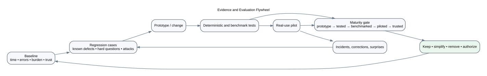
These experiments address assumptions that affect almost every future subsystem.
These determine whether the strongest wedge actually improves real work.
These compare representation and deployment choices.
These explore consolidation, personalization, proactivity, and productization after the kernel is clearer.
No more than three experiments should be active, and only one should materially alter the working prototype at a time.
Does separating object kind, source mode, stance, perspective, proposition, and resolution improve representation without unacceptable complexity?
Whether to replace or supplement the current flat epistemic enums.
Select ten to twenty real examples covering fact, observation, interpretation, memory, preference, goal, plan, decision, question, procedure, and simulation. Represent each using:
Adopt a smaller version of the plural model if it resolves material ambiguities and improves query behavior without making ordinary capture feel like form completion. Otherwise retain source-first storage and add structure at retrieval.
Can the read model be rebuilt without changing semantic identities, recorded times, or applicable intervals?
Whether the current derived projection is safe as a foundation for temporal truth.
Build the same corpus twice; insert a new earlier claim; rename a file; change importer build time; reimport. Compare semantic records.
Zero unexpected semantic differences before temporal answers rely on the projection.
Does pair adjudication behave correctly under time, scope, authority, argument order, and serialization?
Whether reconciliation can automatically create relations or only review cards.
Property and fixture tests for:
Zero false automatic supersessions; all uncertain cases route to review; every semantic field round-trips.
Does a synthesis contract preserve the information needed for a declared task better than a generic summary?
The synthesis artifact model and evaluation requirements.
Use one source set to create:
Predefine protected units and five future questions per purpose.
No generic canonical summary. Adopt purpose contracts if they materially improve retained capability and make omissions understandable.
Which syntheses should be stored, and which should be generated when needed?
Memory hierarchy, invalidation, and maintenance architecture.
Track one active topic and one infrequent topic for four weeks under:
Store only artifacts whose reuse or accepted human meaning justifies maintenance; otherwise retain structured units and generate views.
Which transition fields actually improve resumption?
The transition aggregate and closeout workflow.
Across multiple interruptions, compare:
Keep only fields that contribute to faster or more confident resumption. A shorter field set is a success if it performs as well.
Do purpose-bound project packs outperform whole-handbook or broad-history prompting?
Default context architecture.
Ten real project questions under:
Use the smallest method that meets correctness and conflict requirements. Retain full context as an audit baseline, not default.
Which retrieval mechanisms add net value after a tuned lexical/metadata/link baseline?
Embeddings, reranking, and graph investment.
Maintain at least thirty real questions across exact, current, historical, conflict, low-overlap, multi-hop, global, and negative cases. Compare:
Recall, precision, latency, explanation, privacy, rebuild cost, maintenance, and false semantic matches.
Remove or defer any complex method whose gain is small, unstable, or limited to synthetic cases.
Does preserving narrative originals with selective projections outperform document-only and atom-only representations?
Core storage and object extraction strategy.
Use three complex artifacts: design conversation, personal reflection, and research note. Create document-only, atom-only, and combined representations.
Adopt combined representation only for object types whose structured reuse is demonstrated.
Can users distinguish suppress, archive, supersede, retract, redact, delete, and purge, and does the system enumerate consequences accurately?
Lifecycle vocabulary, UI, retention, and backup architecture.
Create synthetic cases and ask Jonathan to choose desired outcomes. Generate dry-run reports across Markdown, Git, DB, indexes, summaries, snapshots, audit, and backups.
No destructive implementation until the semantic verbs and dry-run scope are predictable.
Which inferred preferences or patterns are useful, acceptable to store, and safe to apply?
Self-model and personalization policy.
Generate ten evidence-backed candidate inferences from real use. For each, show examples, uncertainty, intended uses, expiration, and correction controls.
No durable inference class with low acceptance, high discomfort, or unclear utility. Never store sensitive psychological inferences by default.
Which proactive suggestions are useful enough to surface?
Monitoring, interruption, and initiative policy.
Run two or three read-only monitors silently for four weeks: stale transitions, broken links, review due, or changed external reference. Present one digest for labeling.
Only rules with sustained utility and acceptable nuisance leave shadow mode; default to batching.
Can Jonathan predict what Big Brain Time may do before it acts?
Permission vocabulary and action firewall.
Twenty scenarios across read, suggest, prepare, local write, delete, calendar draft, email draft/send, health, code, and monitoring. Compare expected and policy result.
At least 90% comprehension on enabled action types; confusing rules are redesigned, not explained away.
Can a project be understood and resumed outside Jonathan’s full personal corpus?
Productization around federated project packages.
Export one project into a package containing sources, decisions, state, context contract, re-entry, evaluation, and manifests. Give it to another model or collaborator with no prior context.
Pursue project-brain productization if bounded packages can support accurate resumption without hidden personal dependencies.
Which concepts generalize beyond Jonathan?
Kernel, profile, capability packs, and interface assumptions.
A second user creates a small project brain through guided onboarding and uses it for two weeks.
Only promote concepts to universal kernel after they survive materially different use.
Can the audit prove event integrity and support trust repair without storing sensitive excess?
Audit schema, hashing, locking, retention, and UI.
Full canonicalized event payload integrity, unique sequence under concurrency, reconstruction of actor/basis/result, and no forbidden sensitive payload.
Can handoff packets be generated entirely from current evidence and support correct action without setup questions?
Cross-model continuity and handoff compiler.
Compile packets at multiple revisions; introduce repository changes; compare current/stale behavior; give packets to different models.
No hardcoded repository-state assertions; every factual status links to current run evidence or is marked unverified.
Which capabilities remain useful and safe when generative models are unavailable?
Product resilience and kernel boundaries.
Operate diagnostics, search, re-entry, context browsing, planning, and lifecycle without model synthesis.
Core memory, retrieval, recovery, permission, and lifecycle functions must not require a specific model. Model-dependent capabilities declare degraded mode.
Does an explicit active cognitive frame allocate attention and close consequential actions better than recency-, confidence-, or task-list-based control?
Whether active-frame, collaborator-context, prediction, verification, and degraded-mode contracts belong in the product kernel.
For one real project over two weeks:
Keep the smallest subset of fields that improves commitment protection, error detection, or interruption cost over simpler baselines. Reject any field whose carrying cost exceeds observed control value. No action path advances if execution success can close the action without independent postcondition evidence.
Before the next major probe, record:
Without a baseline, “improvement” becomes a narrative.
| Experiment | Impact | Uncertainty | Cost | Safety relevance | Suggested order |
|---|---|---|---|---|---|
| E01 plural model | very high | high | low–medium | high | 1 |
| E02 identity/time rebuild | very high | medium | medium | high | 1 |
| E04 synthesis contract | very high | high | medium | high | 1 |
| E06 re-entry ablation | high | medium | low | medium | 1 |
| E10 lifecycle comprehension | high | high | low | very high | 1 |
| E08 retrieval ladder | high | medium | medium | high | 2 |
| E09 narrative/projection | high | high | medium | medium | 2 |
| E11 personal inference | high | high | low | very high | 2 |
| E14 portable project brain | high | high | medium | medium | 2 |
| E03 reconciliation | medium–high | medium | medium | high | 2 |
| E12 proactivity | medium | high | low but time-based | high | 3 |
| E13 permissions | medium | medium | low | very high | before action |
| E15 second user | very high | high | high | medium | after kernel probe |
| E16 audit | medium | medium | medium | high | before action |
| E17 handoff | high | medium | low–medium | medium | 2 |
| E18 no-model fallback | high | medium | low | high | 2 |
| E19 active frame / verified action | very high | high | low–medium | very high | 1 |
Pause the experiment program when:
Use templates/EXPERIMENT_CARD.md for each selected experiment. A complete card should state:
The diagrams are alternate views of the written design, not separate sources of truth. Each rendered SVG has an editable Graphviz .dot source in diagrams/.
Use them to:
Do not infer a contract solely from a box or arrow. The accompanying documents define the intended behavior and open questions.
File: diagrams/01_joint_cognitive_system.svg
Editable source: diagrams/01_joint_cognitive_system.dot
Shows the second-generation joint cognitive operating model: purpose, cognitive control, knowledge, governance, and adaptation planes connected through an explicit attend → sense → frame → generate → challenge → decide → act → verify loop. Jonathan, AI collaborators, other people, artifacts, and tools participate across the planes rather than serving as the architecture themselves.
Questions to ask:
Shows the universal kernel, profile/policy, capability packs, adapters, and interfaces.
Questions:
Shows the responsibilities of Jonathan, Big Brain Time, AI models, external authorities, evidence sources, and recovery systems.
Questions:
Shows delivery interfaces, application orchestration, domain kernel, ports, adapters, and stores.
Questions:
Separates trusted control, untrusted evidence, canonical authorities, and disposable derived representations.
Questions:
Shows cognitive, operational, and governance services over shared foundations.
Questions:
Shows preservation before triage and extraction, ephemeral staging, review, canonical acceptance, and projection rebuild.
Use for: voice capture, conversation ingestion, source imports, privacy review.
Questions:
Shows query planning, retrieval, temporal/authority resolution, conflict scanning, context contracts, synthesis, and claim verification.
Questions:
Shows episodes, clusters, deduplication, alternatives, purpose-bound abstraction, retention tests, and consolidated semantic memory.
Questions:
Shows work, interruption, transition capsule, elapsed change, re-entry compilation, first action, and protocol reflection.
Questions:
Shows memory item, source/activity, stance, perspective, optional proposition, resolution, and relations.
Questions:
Shows originals, addressable records, evidence relations, reflections, views, and commitments/actions.
Questions:
Shows semantic diff, dependency graph, impact set, granular proposals, review, execution, projection invalidation, and audit.
Questions:
Shows typed action graphs, deterministic policy, simulation, confirmation, scoped execution, verification, audit, and denial.
Questions:
Shows semantic request, policy classification, representation enumeration, dry run, approval, application, rebuild, verification, and receipt.
Questions:
Shows observation, question framing, research, probe, pilot, measurement, decision, and documentation.
Use for: choosing the next work, resisting feature-roadmap inertia.
Shows universal kernel, profile, capability packs, workflow compositions, interfaces, and deployment envelope.
Questions:
Shows baseline, regression cases, prototype, tests, pilot, incidents, maturity gate, and keep/simplify/remove decision.
Questions:
Illustrates a design question, alternative authority models, and criteria.
Use for: poorly understood or difficult-to-reverse design questions.
Shows recurring architectural qualities and selected tensions.
Use for: architecture reviews and scenario prioritization.
For a major design review:
.dot source and the written contract together.Use the same numbering and include:
.dot source;.svg;Suggested future diagrams:
The workbook is meant to be completed slowly. Copy a section into a dated working note for each session. Use concrete examples from real work. “Unknown” is a useful answer when it becomes a visible question rather than a hidden assumption.
| Capability | Real example | Before BBT | With BBT | Evidence or artifact |
|---|---|---|---|---|
| Friction | Frequency | Consequence | Current workaround | Likely cause |
|---|---|---|---|---|
Keep and strengthen:
Keep as experiments:
Redesign:
Retire or simplify:
For each important capability, mark:
concept | prototype | tested | benchmarked | piloted | trusted | authorized
What evidence would be required for the next label?
Big Brain Time helps ______________________________ when ______________________________ by ______________________________, while never ______________________________.
| Job | Trigger situation | Desired progress | Current alternative | Trust-destroying failure |
|---|---|---|---|---|
| 1 | ||||
| 2 | ||||
| 3 | ||||
| 4 | ||||
| 5 |
What should the system explicitly not claim or attempt?
After one year, Big Brain Time would feel transformative if it reliably ______________________________, while requiring no more than ______________________________ of deliberate maintenance per week, and I trusted it enough to ______________________________.
User / actor:
Situation:
Trigger:
Current friction:
Desired system response:
Evidence required:
Maximum acceptable time:
Privacy boundary:
What must cause abstention:
Success measure:
Failure that destroys trust:
Write five scenarios:
Create a hierarchy for the three most important qualities.
Quality:
├── Subquality:
│ ├── measurable scenario
│ └── measurable scenario
└── Subquality:
Which two desirable qualities are in tension for each scenario?
| Scenario | Quality A | Quality B | What changes the balance? |
|---|---|---|---|
| Information type | Current authority | Why | What BBT stores | What BBT may write | Failure if duplicated |
|---|---|---|---|---|---|
| Calendar | |||||
| GitHub/code | |||||
| Professional tasks | |||||
| Health records | |||||
| Research sources | |||||
| Personal projects |
For each item, select:
canonical narrative | canonical operational | external authority |
derived projection | compiled artifact | ephemeral staging | audit evidence
Information fields to move:
Current authority:
Candidate new authority:
User value:
Dual-write risk:
Export format:
Rollback:
Cutover evidence:
Reconsider if:
Choose one consequential workflow and complete:
Values or identity constraints:
Goal and desired outcome:
Protected commitments:
Current purpose:
Open questions:
Active assumptions and contradictions:
Attention budget and interruption threshold:
Participants, roles, source sets, limitations, permissions:
Observation/source:
Interpretation or claim:
Authority for decision:
Predicted external change:
Authorized action:
Independent verification evidence:
Mismatch response:
Current system-health limits:
Degraded-mode behavior:
Recovery condition:
Method or policy that may need revision:
Choose real examples and complete the matrix.
| Example | Item kind | Source mode | Stance | Perspective | Proposition needed? | Resolution/lifecycle |
|---|---|---|---|---|---|---|
| Objective record | ||||||
| First-person experience | ||||||
| Interpretation | ||||||
| Preference | ||||||
| Value | ||||||
| Decision | ||||||
| Plan | ||||||
| Procedure | ||||||
| Memory with conflicting record | ||||||
| Future simulation |
Questions:
Write ten questions you actually want to ask.
| Question | Mode | Time boundary | Authority | Expected evidence | Conflict/abstention condition |
|---|---|---|---|---|---|
Modes:
factual | memory | perspective | exploration | decision | simulation | narrative
purpose:
audience:
query:
as_of_valid_time:
as_of_recorded_time:
authority_policy:
privacy_ceiling:
required_sources:
protected_information:
conflicts_to_show:
allowed_omissions:
token_or_length_budget:
expiration:
Create two contracts for the same project: re-entry and architecture review. What changes?
For one difficult question, record results from:
Which addition changed the result enough to justify its cost?
Source set:
Future task/question:
Audience:
What must survive:
What may be omitted:
What disagreement must remain visible:
What new interpretation may be proposed:
How will the result be tested:
When does it become stale:
Create from the same sources:
Which one is most useful for the declared purpose? Which one is most dangerous if treated as authority?
For each case choose the desired verb and explain why.
| Case | Hide | Suppress | Archive | Supersede | Retract | Redact | Purge |
|---|---|---|---|---|---|---|---|
| Old completed task | |||||||
| Incorrect research claim | |||||||
| Earlier personal preference | |||||||
| Accidentally captured secret | |||||||
| Sensitive third-party detail | |||||||
| Stale generated context pack |
Choose two tensions from 07_DESIGN_TENSIONS_AND_OPTION_SPACES.md.
QUESTION:
Scenario:
Why now:
OPTION A:
OPTION B:
OPTION C:
CRITERIA:
1.
2.
3.
4.
5.
Evidence for/against each:
Preferred option today:
Confidence:
Missing evidence:
Cheapest discriminating probe:
Repeat.
Did preserving alternatives change the preferred solution? Was the current implementation previously being treated as the only option?
| Question | Decision impact | Uncertainty | Dependencies | Cost | Safety/privacy | Priority |
|---|---|---|---|---|---|---|
RESEARCH QUESTION:
Decision it can change:
Current assumption:
Primary sources:
Standards/official docs:
Current-system evidence:
Contrary evidence:
What the evidence supports:
What it does not support:
Boundary conditions:
Design implications:
Options remaining:
Local probe:
Reconsider date/trigger:
For each candidate concept, answer whether at least three different packs need it.
| Concept | Project pack | Research pack | Learning pack | Stable meaning? | Kernel / pack / profile |
|---|---|---|---|---|---|
| identity | |||||
| provenance | |||||
| time | |||||
| authority | |||||
| memory item | |||||
| commitment | |||||
| context contract | |||||
| permissions | |||||
| evaluation | |||||
| current taxonomy item |
| Product | Primary user | Core job | Minimum capability | Biggest risk | Evidence needed |
|---|---|---|---|---|---|
| Project brain | |||||
| Research workbench | |||||
| Assurance layer | |||||
| Personal platform | |||||
| Team brain |
What must be included so another person or model can use a project without private personal context?
What should be excluded?
Which hidden assumptions are currently in Jonathan’s head or global corpus?
Use templates/EXPERIMENT_CARD.md.
Minimum fields:
Experiment ID:
Decision affected:
Hypothesis:
Alternatives:
Baseline:
Probe:
Failure cases:
Measures:
Privacy/safety:
Decision rule:
Stop rule:
Raw evidence location:
Imagine the experiment produced a convincing but misleading result. How might that happen?
PRODUCT WEDGE:
PRIMARY USER:
TRANSFORMATIVE OUTCOME:
KERNEL CAPABILITIES:
PROFILE/POLICY:
CAPABILITY PACKS:
CANONICAL AUTHORITIES:
DERIVED REPRESENTATIONS:
EXTERNAL AUTHORITIES:
ACTIVE FRAME AND ATTENTION POLICY:
COLLABORATOR CONTEXT AND COMMON GROUND:
ACTION PREDICTION AND VERIFICATION:
SYSTEM HEALTH, DEGRADED MODES, AND RECOVERY:
DOMINANT QUALITY ATTRIBUTES:
TOP RISKS:
EVIDENCE SUPPORTING THIS ARCHITECTURE:
OPEN ALTERNATIVES:
NEXT SMALLEST BUILD:
Stop point:
Restart cue:
Next micro-action:
Resumption trigger:
| ID | Date | Workflow | Observation | Consequence | Source artifact | Design question created? |
|---|---|---|---|---|---|---|
| ID | Question | Status | Impact | Current options | Next evidence | Decision link |
|---|---|---|---|---|---|---|
| ID | Decision | Status | Baseline | Probe | Result | Next action |
|---|---|---|---|---|---|---|
| Structure/feature | Why it exists | Evidence of use | Maintenance cost | Keep / simplify / remove |
|---|---|---|---|---|
Abstention — A deliberate system result stating that available evidence or policy does not support the requested conclusion or action.
Activity — A provenance-producing process such as capture, import, extraction, synthesis, decision, migration, or execution.
Active cognitive frame — Inspectable temporary control state containing current purpose, protected commitments, open questions, assumptions, contradictions, attention budget, interruption threshold, participant context, known gaps, health limits, and expiry conditions.
Adapter — Replaceable implementation connecting a core port to a technology or external system, such as Markdown, SQLite, a model provider, GitHub, or calendar.
Agent — A person, AI model, script, organization, or external system that creates, reports, transforms, decides, or executes something.
Append-oriented correction — Preserving earlier meaningful state while adding a correction, retraction, or supersession relation rather than silently overwriting history.
Argument — A structured reason for a conclusion, often containing premises, assumptions, inference, objections, and attacks.
Artifact — A durable or temporary representation such as a file, source record, context pack, decision, diagram, summary, or proposal.
Assumption environment — A set of assumptions under which particular conclusions or designs apply; multiple incompatible environments may coexist.
Attention allocation — The governed selection of what to surface, defer, ignore, or escalate using purpose, commitment risk, consequence, uncertainty, reversibility, novelty, value sensitivity, deferral cost, interruption cost, and current capacity.
Authority — The declared right or precedence to report, decide, or govern an information type within a domain and time scope.
Authorized — A maturity state in which policy permits a capability to perform a defined action in a defined scope.
Baseline — A measured state before an intervention, used to determine whether the system improved.
Benchmarked — A maturity state in which a declared evaluation suite meets its threshold for a specified version and scope.
Belief — An informational stance about how the world is represented; distinct from desire, intention, plan, or decision.
Bitemporal — Representing both when something applies in the modeled world and when the system learned or recorded it.
Buoyancy — A reversible relevance or visibility signal; it affects ranking but does not determine truth or retention.
Canonical authority — The active source of truth for a specific information type or field.
Capability — A reliable outcome the joint system can achieve, such as accurate re-entry, source-grounded explanation, or safe propagation.
Capability pack — A domain or workflow extension using kernel contracts, such as project continuity, research, learning, or health preparation.
Capture-to-use conversion — The proportion of captured material that later supports a decision, project, view, reminder, or meaningful retrieval.
Claim — A truth-apt assertion; in this package, only one kind of memory object rather than the universal storage unit.
Command — A typed request to change state after validation and authorization.
Commitment — An accepted goal, decision, intention, plan, task, or obligation that governs action; not simply a factual belief.
Commitment ledger — The durable record of promises and obligations, including who committed to what, to whom, why, by when, current risk, and explicit cancellation or supersession conditions.
Compiled artifact — A purpose-specific derived output such as a context pack, briefing, handoff, or synthesis, usually with a manifest and invalidation rule.
Concept — A maturity state in which an idea and rationale exist but feasibility or value is not yet demonstrated.
Consolidation — A process that creates more general, compact, or reusable memory from multiple source items while preserving lineage and testing loss.
Context contract — A declaration of purpose, audience, time, authority, privacy, source set, omissions, protected information, and budget for a context pack.
Context pack — A bounded, inspectable evidence package compiled for a particular task, human, model, or handoff.
Control plane — Trusted requests, policies, tool schemas, grants, and commands that may govern runtime behavior.
Common ground — The participants’ sufficiently aligned understanding of the objective, scope, source set, roles, constraints, and decision being requested; divergence calls for explicit repair.
Cognitive immune response — A governed response that labels, quarantines, challenges, corroborates, or escalates suspicious or inadequate material without claiming to determine truth autonomously.
Correction — A later item or relation that changes the system’s epistemic position toward an earlier assertion.
Current truth — The result of a query applying time, scope, authority, supersession, conflict, and evidence policy; not simply the newest text.
Decision — An authority-bearing choice that governs action or architecture. It may be informed by facts and values but is not itself an empirical fact.
Derived projection — Rebuildable structure such as an index, graph candidate, embedding, section table, or summary.
Degraded mode — An explicit operating state in which missing or unreliable context, dependencies, models, tools, policies, or human capacity narrows permitted behavior and names a fallback and recovery condition.
Design question — An unresolved issue about product, cognition, interaction, architecture, or policy that should be explored before implementation commitment.
Design rationale — The questions, options, criteria, evidence, tradeoffs, and reasons surrounding a design choice.
Design studio — The temporary mode in which Big Brain Time emphasizes research, option mapping, probes, and evidence-backed product design over rapid feature implementation.
Deterministic — Producing the same logical result from the same declared inputs and versions, apart from explicitly excluded metadata.
Distributed cognition — The view that cognitive performance can arise from an organized system of people, representations, tools, and environment.
Domain — A bounded area such as projects, research, health preparation, code, calendar, or personal preferences, often with its own authority and policy.
Engram maturation — A biological-memory concept used by emerging agent-memory research to describe memories becoming more stable; an analogy, not a required software mechanism.
Ephemeral staging — Temporary, non-canonical candidates awaiting review, promotion, or expiry.
Epistemic class — A label describing the nature or status of a claim; this package recommends separating it from object kind, source mode, stance, and logical relation.
Epistemic plurality — The ability to represent multiple perspectives, hypotheses, memories, narratives, and assumption environments without forcing premature factual resolution.
Epistemic state — A typed relationship between the system and content—such as observed, inferred, accepted, decided, verified, disputed, or superseded—kept distinct from confidence, object kind, and lifecycle.
Epistemic ledger — Source-, scope-, and time-aware records of observations, interpretations, claims, support, contradictions, accepted working beliefs, dependencies, and supersession.
Evaluation case — A versioned question or task with expected evidence, forbidden claims, time/authority conditions, rubric, and abstention behavior.
Evidence — Source material that may support, contradict, qualify, or originate a claim; evidence is not runtime instruction.
Evidence plane — Retrieved or imported content treated as untrusted data even when it is authoritative evidence.
Experiment — A bounded intervention designed to change a material design decision through evidence.
External authority — A system outside Big Brain Time that remains authoritative for its own records, such as a calendar, email service, GitHub, or health portal.
Factual mode — A query mode applying strict evidence, source, time, scope, conflict, and abstention policy.
Fitness function — An automated or repeatable check that continuously tests an architectural property such as deterministic rebuild, source lineage, or permission boundaries.
Friction record — A preserved observation of difficulty, confusion, repeated work, error, or unexpected value in a real workflow.
Generalization — A proposed rule or pattern formed across multiple examples; it creates a new proposition and must preserve exceptions and evidence.
Global sensemaking — Reasoning across a corpus or portfolio to identify themes, patterns, contradictions, or systemic relationships rather than retrieving one local fact.
Grant — A structured authorization scoped by domain, action, target, privacy, time, consequence, and confirmation mode.
Handoff packet — A revision-bound context and execution artifact enabling another model or person to begin the correct work with evidence and stop conditions.
Historical state — What was valid, believed, decided, or recorded at an earlier time.
Human authority — The principle that values, personal identity, consequential commitments, and permissions remain governed by the appropriate human, not model confidence.
Identity — A stable reference for an agent, artifact, memory item, record, commitment, or activity that survives rebuilds and does not encode mutable status.
Information unit — A fact, observation, decision, exception, perspective, or other content element used to evaluate what a synthesis preserves.
Initiative level — The allowed degree of system proactivity: retrieve, suggest, prepare, act, monitor, or negotiate.
Intention — A selected commitment toward future action, distinct from a desire or belief.
Invalidation — Marking a derived artifact stale because a source, policy, model, or dependency materially changed.
Joint cognitive system — Jonathan, AI collaborators, other people, artifacts, methods, language, tools, and environment considered as one organized capability system whose function is to maintain control and orientation under finite attention and uncertainty.
Joint cognitive operating loop — Attend, sense, frame, generate, challenge, decide, act, and verify, with outcome and incident evidence feeding adaptation.
Kernel — The minimal stable product contracts reused across capability packs, profiles, adapters, and interfaces.
Knowledge assurance — Diagnostics and policies that make integrity, identity, time, conflict, source, recovery, and propagation failures visible.
Lifecycle state — An item’s current retention and use status, such as draft, active, superseded, retracted, archived, suppressed, redacted, purged, expired, or invalidated.
Local-first — An architecture prioritizing local ownership, offline capability, privacy, longevity, and user control; not merely a web app running on localhost.
Local question — A query about a bounded fact, record, decision, project, or source.
Manifest — A machine-readable record of inputs, versions, sources, hashes, policies, exclusions, and outputs for a compiled or rebuilt artifact.
Memory item — The general preserved cognitive/informational object: episode, assertion, narrative, preference, value, goal, plan, decision, question, simulation, procedure, or reference.
Memory misevolution — Gradual harmful behavior from contaminated, biased, noisy, or misleading persistent memory updates.
Memory mode — A query mode focused on what was experienced or remembered, with source distinctions rather than automatic external factualization.
Memory layer — A resolution level such as original artifacts, addressable records, relations, reflections, context views, or commitments.
Model independence — Keeping canonical memory, context contracts, evaluation cases, and proposals usable across model providers.
Modular monolith — One deployable application with explicit internal module boundaries and ports/adapters, avoiding unnecessary distributed-system complexity.
Narrative mode — A mode prioritizing authentic voice, meaning, and temporal self-understanding with minimal forced classification.
Nonmonotonic reasoning — Reasoning in which new information may invalidate prior conclusions without implying the prior reasoning was irrational at the time.
Object kind — The category of a memory item, such as episode, preference, plan, decision, or simulation.
Observability gap — Material missing evidence, state, timestamp, or signal that prevents a trustworthy conclusion.
Operational aggregate — A transactional group of structured state and invariants, such as a project/task or transition aggregate.
Original artifact — The preserved source before extraction, normalization, summarization, or other transformation.
Pack — Either a context artifact or capability extension; the surrounding term should disambiguate context pack from capability pack.
Perspective — The agent, time-specific self, organization, or simulated holder from whose standpoint a stance or narrative is represented.
Perspective mode — A query mode that presents who believed, interpreted, preferred, or intended what without forcing one winner.
Piloted — A maturity state in which a capability has been used in real work with feedback and burden recorded.
Port — A stable interface the kernel uses to request storage, search, model, time, audit, or action behavior from adapters.
Preservation value — A retention priority based on historical, safety, explanatory, legal, emotional, or recovery importance; separate from current relevance.
Procedure — A versioned method for performing a task, supported by demonstrations and outcomes rather than treated as universally correct.
Prediction ledger — A record of expected change, possible failure, and the evidence that would show whether a consequential action or method worked.
Product wedge — A focused recurring job through which the broader kernel can deliver and demonstrate value.
Profile — Inspectable user/project/group configuration containing vocabulary, authority, privacy, retention, initiative, and accepted preferences.
Projection — A derived representation built from canonical or external sources for query, display, or analysis.
Proposal — A reviewable possible change or action that has not yet been authorized or applied.
Proposition — A normalized truth-apt structure, typically subject, predicate, object, polarity, and scope.
Prospective memory — Remembering to carry out an intention when a future time, event, state, or context occurs.
Prototype — An inspectable artifact demonstrating feasibility without a broad reliability or value claim.
Provenance — Information about source, agent, activity, derivation, version, and responsibility.
Purge — An explicit destructive lifecycle operation intended to remove a semantic item and controlled replicas, with residual limitations disclosed.
QOC — Questions–Options–Criteria, a design-rationale notation for mapping design issues, alternatives, and evaluation criteria.
Quality-attribute scenario — A concrete stimulus, environment, affected artifact, expected response, and measurable outcome for a quality such as reliability or privacy.
Query — A read-only request for information or a compiled view.
Query mode — The cognitive/epistemic policy for a question: factual, memory, perspective, exploration, decision, simulation, or narrative.
Read model — A query-optimized derived representation, such as SQLite sections, FTS, links, or relations, safe to rebuild from authority.
Reconsideration trigger — A condition under which a decision, procedure, preference, or architecture should be reviewed.
Re-entry capsule — A compact project continuity artifact including stop point, restart cue, next micro-action, resumption trigger, and relevant changed state.
Redact — Remove protected payload while retaining permissible structural or process information.
Relation — A connection such as supports, attacks, qualifies, derives-from, depends-on, supersedes, or conflicts-with.
Resolution — The current system stance toward a truth-apt assertion: supported, insufficient, disputed, superseded, retracted, historical, or unresolved.
Retract — Withdraw endorsement of an item while preserving that it existed and why the position changed.
Retrieval — Selecting candidate evidence or objects for a query; retrieval alone does not establish truth or contradiction.
Review mode — A deliberate role or process distinct from implementation, intended to challenge assumptions and verify evidence.
Risk tier — A classification of potential consequence and required controls for an action or data use.
Scenario environment — A declared set of assumptions for a simulation, architecture option, or counterfactual world.
Semantic diff — A comparison of meaning, state, scope, time, or relations rather than only changed text lines.
Simulation mode — A query or memory mode for possible futures and counterfactuals, explicitly separated from actual current state.
Source artifact — A file, conversation, record, event, email, webpage, or other preserved evidence source.
Source mode — How content was obtained: perceived, measured, remembered, reported, imported, inferred, generated, imagined, or accepted.
Stance — How an agent relates to content: asserts, remembers, doubts, prefers, intends, explores, and so on.
System health — Current dependency, context, model, policy, incident, and human-review conditions that determine whether normal or degraded behavior is allowed.
Structured projection — Selected semantic records derived from narrative sources for query or reasoning.
Suppress — Reversibly reduce default visibility, ranking, or notification without deleting the item.
Supersede — Prefer a later or more applicable item while retaining the earlier item and relationship.
Synthesis — A family of operations creating a smaller, comparative, generalized, or task-specific representation from sources.
Synthesis contract — The declared purpose, source set, protected content, method, omissions, loss class, and invalidation for a synthesis.
Tested — A maturity state in which deterministic tests pass for a declared semantic and technical scope.
Temporal resolver — A component applying valid time, recorded time, supersession, retraction, scope, and authority to determine applicable states.
Transition — A structured record supporting interruption and later resumption.
Trusted — A maturity state supported by sustained use, correctness, recovery, and safety evidence in a declared scope.
Trust repair — The process of locating an error, showing its basis, accepting correction, preserving the incident, changing behavior, and recalibrating confidence.
Untrusted evidence — Content that may be authoritative for a factual domain but is never allowed to issue runtime instructions merely because it was retrieved.
Valid time — The period during which a claim or state is intended to apply in the modeled world.
Verification — Independent observation and reconciliation of actual external state against a declared prediction; executor success alone is not sufficient.
View — A task-oriented representation assembled from canonical and derived information; it does not become a second source of truth.
Working context — Temporary bounded information compiled for the current task. It supplies content to the active cognitive frame but does not by itself decide salience, interruption, or authority.
Working self — In autobiographical memory theory, current goals and self-processes that shape memory construction; used here as a design concept, not a literal software module.
Zero false automatic supersessions — A conservative reconciliation goal: uncertain changes route to review rather than silently replacing prior claims.
Package prepared: 2026-07-27
Current-repository review: static inspection of admiralorbiter/bigbraintime on 2026-07-27
External research review: sources available through 2026-07-27
This package distinguishes four evidence layers:
The package does not claim that external research proves the proposed product architecture. Research is used to reveal distinctions, constraints, likely failure modes, and experiment designs.
[CURRENT] — observed in the current repository or current project documentation.[SOURCE] — directly supported by the supplied Big Brain Time materials.[RESEARCH] — supported by external primary research, standards, or official documentation.[PROPOSAL] — a design recommendation introduced in the studio.[QUESTION] — unresolved.[EXPERIMENT] — proposed local evidence collection.[INFERENCE] — reasoned combination of evidence and design judgment.A clear proposal is still a proposal.
Exact copies of the uploaded materials are preserved under reference/source-blueprint/.
Some uploaded filenames differ from the title inside the file. The table records both.
| Uploaded filename | Internal title / role |
|---|---|
00_EXECUTIVE_BLUEPRINT.md |
Repository audit and planning transcript; original problem evidence and research questions |
00_SPRINT_0_CHARTER.md |
Sprint 0 Program Charter, scope boundaries, initial defect fixtures |
01_RESEARCH_SYNTHESIS(1).md |
00 — Executive Blueprint; north star, capability tests, horizons, architecture laws |
02_TARGET_ARCHITECTURE.md |
01 — Research Synthesis and Design Implications |
03_DOMAIN_AND_DATA_MODEL(1).md |
02 — Target Architecture |
04_RETRIEVAL_CONTEXT_AND_MEMORY.md |
03 — Domain and Data Model |
05_SAFETY_PERMISSIONS_AND_THREAT_MODEL.md |
04 — Retrieval, Context, and Long-Term Memory |
06_ROADMAP_MILESTONES_AND_SPRINTS(1).md |
05 — Safety, Permissions, and Threat Model |
07_EVALUATION_AND_EXPERIMENTS.md |
06 — Roadmap, Milestones, Tasks, and Sprints |
08_ARCHITECTURE_DECISION_PROPOSALS.md |
07 — Evaluation and Experiments |
09_RESEARCH_BIBLIOGRAPHY(1).md |
08 — Architecture Decision Proposals |
10_DISCOVERY_AND_REQUIREMENTS_WORKSHEET(1).md |
09 — Research Bibliography and Evidence Map |
11_RISK_REGISTER(1).md |
10 — Discovery and Requirements Worksheet |
ARCHITECTURE_DECISION_RECORDS.md |
Locked ADRs for epistemic, retrieval, watcher, audit, handoff, and reconciliation design |
ARTIFACT_MANIFEST(1).md |
11 — Risk Register |
BIG_BRAIN_TIME_SYSTEM_BLUEPRINT(1).md |
Artifact Manifest for the earlier package |
README(3).md |
Product Backlog — 24 sprints / 120 tasks |
Because of these filename/title mismatches, this studio normally cites the internal document title and section rather than assuming the filename number is semantically correct.
The following ideas came from the supplied package and are preserved rather than silently replaced:
The design studio’s 01_CURRENT_PRODUCT_AND_PROOF_OF_CONCEPT.md also draws on a static review of the current repository, including:
README.md and project state;AGENTS.md;Important limitation: the studio did not independently execute the repository test suite. Repository-reported test counts are therefore treated as implementation claims that should be bound to run artifacts in a future self-audit.
| Studio document | Primary supplied basis | Additional research/proposal introduced |
|---|---|---|
00_DESIGN_STUDIO_CHARTER.md |
source roadmap rules, evaluation gates, risk register | DSRM, Spiral, QOC, ATAM; design-mode governance |
01_CURRENT_PRODUCT_AND_PROOF_OF_CONCEPT.md |
source blueprint and live repo | conservative maturity map and freeze strategy |
02_PRODUCT_THESIS_AND_CAPABILITY_MODEL.md |
executive blueprint, jobs and horizons | five-plane joint cognitive operating model, active frame, product kernel, project/personal/shared scales |
03_SYSTEM_LANDSCAPE_AND_ARCHITECTURE.md |
target architecture, authority matrix, safety | closed cognitive control loop, verified action lifecycle, degraded modes, federated project-brain alternative, and fitness functions |
04_SUBSYSTEM_ATLAS.md |
all architecture and domain documents | attention/coordination subsystem, responsibility cards, subsystem probes, seam map |
05_COGNITIVE_AND_MEMORY_MODEL.md |
epistemic markers, temporal truth, joint system | active frame, epistemic-state progression, transactive memory, cognitive immune response, plural object model, source mode, stance, perspective, cognitive modes |
06_SYNTHESIS_CONSOLIDATION_AND_FORGETTING.md |
context contracts, summaries-as-caches, managed forgetting | information-bottleneck framing, synthesis contract, purge transaction |
07_DESIGN_TENSIONS_AND_OPTION_SPACES.md |
ADRs, risks, architecture alternatives | QOC option maps and additional macro alternatives |
08_RESEARCH_AGENDA_AND_EVIDENCE_MAP.md |
supplied bibliography and research gaps | 2025–2026 memory benchmarks and prioritized local probes |
09_PRODUCT_DESIGN_METHOD_AND_GOVERNANCE.md |
roadmap gates and evaluation process | evolvable method/policy jurisprudence, collaborator context, four backlogs, risk-driven studio workflow, decision packets |
10_GENERALIZATION_AND_PRODUCTIZATION.md |
capability-platform horizon | active-frame, health, verification, and kernel/profile/pack productization model |
11_EXPERIMENT_PORTFOLIO_AND_DECISION_GATES.md |
existing ten experiments and scorecard | semantic-foundation and productization experiments |
12_DIAGRAM_ATLAS.md |
supplied Mermaid diagrams | rendered cross-level architecture and cognitive diagrams |
13_DESIGN_WORKBOOK.md |
discovery worksheet and roadmap | paced studio exercises |
14_GLOSSARY.md |
existing terminology | reconciled vocabulary for plural cognition and product design |
| Source | Status | Design use |
|---|---|---|
| Conway, M. A., & Pleydell-Pearce, C. W. (2000). The construction of autobiographical memories in the self-memory system. | Peer-reviewed | Memories as constructed in relation to autobiographical knowledge and current goals; supports perspective/purpose-aware retrieval. |
| Johnson, M. K., Hashtroudi, S., & Lindsay, D. S. (1993). Source monitoring. | Peer-reviewed review | Distinguishes perceived, remembered, imagined, and reported sources; motivates source mode. |
| McClelland, J. L., McNaughton, B. L., & O’Reilly, R. C. (1995). Why there are complementary learning systems in the hippocampus and neocortex. | Peer-reviewed | Fast episodic capture versus slower semantic integration. |
| Schacter, D. L., Addis, D. R., & Buckner, R. L. (2007). Constructive episodic simulation work. | Peer-reviewed | Memory supports future simulation; motivates explicit scenario objects. |
| Risko, E. F., & Gilbert, S. J. (2016). Cognitive Offloading. | Peer-reviewed review | External tools can redistribute cognitive work; motivates measuring skill and dependence. |
| Licklider (1960), Engelbart (1962), Hutchins (1995). | Foundational | Human–computer symbiosis, augmentation, and distributed cognition. |
| Gonzalez, C., et al. (2026). Toward a science of human–AI teaming for decision making: A complementarity framework. PNAS Nexus. DOI: 10.1093/pnasnexus/pgag030. | Peer-reviewed | Treats reasoning, memory, and attention as foundational functions joined by meta-coordination; motivates the active frame and role-aware control loop. |
| Wegner, D. M., Erber, R., & Raymond, P. (1991). Transactive Memory in Close Relationships. | Peer-reviewed | Collective memory includes knowledge of who knows what; motivates capability/context registries and cautions against imposed role structures. |
| Sperber, D., et al. (2010). Epistemic Vigilance. | Peer-reviewed review | Communication creates exposure to accidental and intentional misinformation; motivates source, context, plausibility, corroboration, and cognitive-immune responses. |
| Horvitz, E. (1999). Principles of Mixed-Initiative User Interfaces and Mixed-Initiative Interaction. | Peer-reviewed conference/journal | Initiative depends on uncertainty, timing, value, and user control; motivates interruption thresholds, deferral, and role negotiation. |
| Woods, D. D. (2018). The Theory of Graceful Extensibility. | Peer-reviewed | Sustained adaptability requires extending adaptive capacity under surprise; motivates visible degraded modes and recovery paths. |
| Leroy & Glomb (2018); Masicampo & Baumeister (2011). | Peer-reviewed | Ready-to-resume and prospective closure. |
| Jilek et al. (2019; 2026). Managed forgetting. | Peer-reviewed/book chapter | Buoyancy, reversible suppression, preservation value. |
| Source | Status | Design use |
|---|---|---|
| Doyle, J. (1979). A Truth Maintenance System. | Peer-reviewed/classic | Preserve justifications and revise dependent conclusions. |
| de Kleer, J. (1986). An Assumption-Based TMS. | Peer-reviewed | Multiple inconsistent assumption environments and alternatives. |
| Dung, P. M. (1995). Argumentation framework. | Peer-reviewed | Arguments, attacks, and multiple acceptable positions. |
| Rao, A. S., & Georgeff, M. P. (1995). BDI Agents: From Theory to Practice. | Conference paper | Separate beliefs, desires, and intentions. |
| Tishby, N., Pereira, F. C., & Bialek, W. (2000). The Information Bottleneck Method. | Primary paper/preprint | Compression is relative to a relevance objective. |
| W3C PROV Overview / PROV-DM. | W3C standard | Agents, entities, activities, derivation, attribution. |
| Snodgrass (1999). Temporal database applications. | Foundational book | Valid time, transaction/recorded time, bitemporal queries. |
| RFC 5545 iCalendar. | IETF standard | Recurrence and exception semantics. |
| Source | Status | Design use |
|---|---|---|
| Kleppmann et al. (2019). Local-First Software. | Peer-reviewed/conference essay | Ownership, offline capability, longevity, privacy, multi-device ideals. |
| Fowler. Strangler Fig Application and Patterns of Legacy Displacement. | Practitioner primary source | Incremental migration and seams rather than big-bang rewrite. |
| Peffers et al. (2007). DSRM. | Peer-reviewed | Problem → objective → artifact → demonstration → evaluation → communication. |
| Boehm (1988). Spiral Model. | Peer-reviewed/classic | Risk-driven iteration. |
| MacLean et al. (1991). QOC. | Peer-reviewed | Questions, options, criteria, and preserved design rationale. |
| Kazman et al. (1998). ATAM. | SEI technical report | Quality-attribute scenarios and architecture tradeoffs. |
| Flask application factory documentation. | Official documentation | Thin, testable interfaces and modular app construction. |
SQLite FTS5, backup API, VACUUM INTO, STRICT tables. |
Official documentation | Local search, recovery, and constrained data model. |
| Source | Status | Design use |
|---|---|---|
| Lost in the Middle | Peer-reviewed/preprint lineage | Long context position effects. |
| RULER | Research benchmark | Effective context under multi-hop/aggregation. |
| NoLiMa | Research benchmark | Low lexical overlap and semantic bridging. |
| LongMemEval | Research benchmark | Multi-session extraction, temporal updates, abstention. |
| GraphRAG research and documentation | Research/official project | Separate local retrieval from global sensemaking. |
| RAGAS and ARES | Research frameworks | Separate context, faithfulness, and answer relevance. |
| Greshake et al. (2023). Indirect prompt injection. | Primary security research | Evidence/control separation and least privilege. |
| NIST AI RMF 1.0 Core and NIST AI 600-1 | Official guidance | Human oversight, lifecycle monitoring, independent evaluation, incident response, recovery, change management, and safe decommissioning. |
| OWASP prompt-injection and agent-security guidance | Official community guidance | Privilege, output validation, monitoring, and human approval. |
These sources are recent and should be treated as research directions and benchmark ideas, not settled architecture laws.
| Source | Date/status | Main relevance |
|---|---|---|
| MemoryAgentBench | 2025 preprint | Evaluates accurate retrieval, test-time learning, long-range understanding, and selective forgetting; current systems do not master all. |
| Human-Inspired Memory Architecture for LLM Agents | May 2026 preprint/MSR | Consolidation, interference-based forgetting, maturation, reconsolidation, graphs, multi-cue retrieval; useful mechanisms and tradeoff curves. |
| MemEvoBench | April 2026 preprint | Long-horizon memory safety under adversarial injection, noisy tools, and biased feedback. |
| RHELM | May 2026 preprint/MSR | Heterogeneous, evolving, multi-source memory and contextual reasoning. |
| Toward Human-AI Complementarity Across Diverse Tasks | May 2026 preprint | Confidence-based routing does not reliably identify AI errors; motivates richer allocation of scarce human attention and independent evaluation. |
| GroupMemBench | May 2026 preprint/MSR | Speaker-grounded memory, multi-party beliefs, and audience-sensitive language. |
| A-MEM | 2025 preprint | Dynamic note linking and memory evolution inspired by Zettelkasten. |
| Recent memory-to-action and interdependent-session benchmarks | 2026 emerging | Evaluate whether stored memory supports coherent tool use and continued tasks, not only recall. |
A research-derived idea may become an accepted Big Brain Time decision only when:
A recent benchmark result alone does not promote an architecture.
For load-bearing research claims, record:
citation_key:
full_citation:
url_or_doi:
publication_date:
accessed_at:
status: peer_reviewed | preprint | standard | official_docs | practitioner
exact_supported_claim:
boundary_conditions:
design_interpretation:
decisions_influenced:
reconsider_if:
Quote sparingly. Prefer an accurate paraphrase and location/DOI.
All diagrams in diagrams/ were created for this design studio from the combined current-system review, supplied blueprint, and new proposals. They are not copied figures from external publications.
Each .svg is generated from the adjacent .dot source. The diagrams are proposal views and should be versioned with the written model.